Pytanie nr 1
Na rysunku procesor oznaczony jest numerem
A. 2
B. 3
C. 5
D. 8

Pytanie nr 2
Na rysunku karta rozszerzeń oznaczona jest numerem
A. 1
B. 4
C. 6
D. 7

Pytanie nr 3
Rysunek przedstawia pamięć
A. SIMM
B. DDR DIMM
C. SDRAM DIMM
D. Compact Flash

Pytanie nr 4
W przedstawionej na schemacie płycie głównej zasilanie należy podłączyć do złącza oznaczonego numerem
A. 3
B. 5
C. 6
D. 7

Pytanie nr 5
W przedstawionej na schemacie płycie głównej złącze PCI oznaczone jest numerem
A. 1
B. 2
C. 3
D. 4
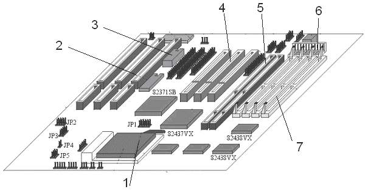
Pytanie nr 6
Do którego wyprowadzenia należy podłączyć głośniki aktywne w karcie dźwiękowej, której schemat funkcjonalny przedstawia rysunek?
A. Mic in
B. Line in
C. Line out
D. Speaker out

Pytanie nr 7
Który z elementów pokazanych na schemacie karty dźwiękowej na rysunku służy do cyfrowego przetwarzania sygnałów?
A. Przetwornik A/D
B. Procesor DSP
C. Syntezator
D. Mikser

Pytanie nr 8
Ile komórek pamięci można zaadresować bezpośrednio w 64 bitowym procesorze, który ma 32 bitową szynę adresową?
A. 2 do potęgi 32
B. 2 do potęgi 64
C. 32 do potęgi 2
D. 64 do potęgi 2
Pytanie nr 9
Klaster komputerowy to
A. komputer z macierzą dyskową
B. komputer z wieloma procesorami
C. grupa komputerów pracujących współbieżnie tak, jakby był to jeden komputer
D. komputer zapasowy, na którym co pewien czas wykonywana jest kopia systemu głównego
Pytanie nr 10
Pamięć oznaczona symbolem PC3200 nie może współpracować z magistralą
A. 300 MHz
B. 333 MHz
C. 400 MHz
D. 533 MHz
Pytanie nr 11
Co oznacza jednostka dpi podawana w parametrach katalogowych skanerów i drukarek?
A. Punkty na cal
B. Gęstość optyczną
C. Punkty na milimetr
D. Punkty na centymetr
Pytanie nr 12
Jaka jest maksymalna prędkość odczytu płyt CD-R w napędzie oznaczonym x48?
A. 480 kB/s
B. 4800 kB/s
C. 7200 kB/s
D. 10000 kB/s
Pytanie nr 13
Urządzenie komputerowe, które bezwzględnie powinno być podłączone do sieci za pośrednictwem UPS, to
A. dysk zewnętrzny
B. drukarka atramentowa
C. serwer sieciowy
D. ploter
Pytanie nr 14
Jeżeli podczas podłączenia stacji dysków elastycznych 1,44 MB kabel danych zostanie podłączony odwrotnie, to
A. BIOS komputera zgłosi błąd podłączenia stacji dysków
B. BIOS komputera poprawnie wykryje stację dysków
C. BIOS komputera wykryje stację dysków jako 2,88 MB
D. stacja dysków ulegnie uszkodzeniu
Pytanie nr 15
Jakie elementy znajdują się na przedstawionej płycie głównej?
A. 2 złącza ISA, 3 złącza PCI, 4 złącza pamięci DIMM
B. 2 złącza ISA, 4 złącza PCI, 3 złącza pamięci DIMM
C. 3 złącza ISA, 4 złącza PCI, 2 złącza pamięci DIMM
D. 4 złącza ISA, 2 złącza PCI, 3 złącza pamięci DIMM

Pytanie nr 16
Na schemacie blokowym, przedstawiającym fragment systemu mikroprocesorowego, symbolem X oznaczono
A. pamięć Cache
B. kontroler DMA
C. kontroler przerwań
D. pamięć stałą ROM
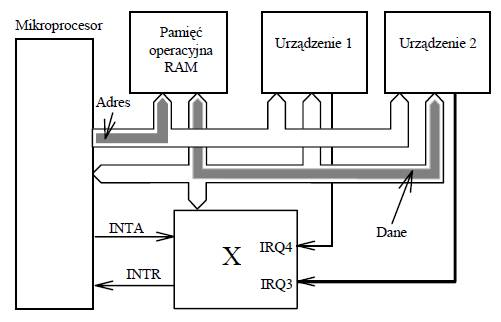
Pytanie nr 17
Na zdjęciu przedstawiono płytę główną komputera. Strzałką oznaczono
A. procesor z umocowanym
radiatorem
B. chip wbudowanej karty graficznej
C. kontroler mostka północnego
z umocowanym radiatorem
D. kontroler mostka południowego
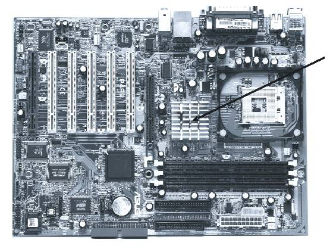
Pytanie nr 18
Zdjęcie przedstawia kartę
A. sieciową ze złączem ISA
B. dźwiękową ze złączem PCI
C. telewizyjną ze złączem ISA
D. telewizyjną ze złączem PCI

Pytanie nr 19
Który z interfejsów jest interfejsem równoległym?
A. LPT
B. PS/2
C. RS232
D. USB
Pytanie nr 20
Na schemacie blokowym procesora blok funkcyjny nazwany SIMD to
A. zestaw 256 bitowych rejestrów znacznie przyspieszający obliczenia na liczbach stałopozycyjnych
B. zestaw 128 bitowych rejestrów niezbędny przy wykonywaniu instrukcji SSE procesora na liczbach stało- i zmiennoprzecinkowych
C. jednostka zmiennoprzecinkowa procesora (koprocesor)
D. moduł procesora realizujący wyłącznie operacje graficzne

Pytanie nr 21
Jaką funkcję pełnią elementy Tr1 i Tr2 widoczne na schemacie przedstawiającym kartę sieciową Ethernet?
A. Sygnalizują za pomocą dźwięku aktywność karty sieciowej
B. Zapewniają szyfrowanie i deszyfrowanie danych przesyłanych przez sieć
C. Sygnalizują za pomocą świecenia kolorem zielonym szybkość pracy karty sieciowej
D. Zapewniają izolację obwodu elektrycznego sieci LAN od obwodu elektrycznego komputera

Pytanie nr 22
Schemat blokowy przedstawia
A. streamer
B. dysk twardy
C. napęd dyskietek
D. napęd DVD-ROM
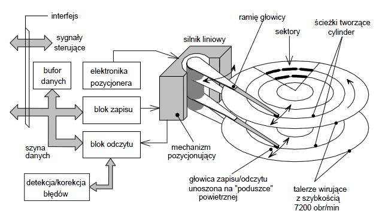
Pytanie nr 23
Zgodnie z przedstawionym w tabeli standardem opisu pamięci PC-100 wskaż
pamięć, która ma maksymalny czas dostępu 6 nanosekund i minimalne opóźnienie między sygnałami CAS i RAS wynoszące 2 cykle zegara
A. PC100-322-60
B. PC100-323-70
C. PC100-332-70
D. PC100-333-60

Pytanie nr 24
Zgodnie z dokumentacją karty graficznej jej zdolność do pracy z systemem AGP 2X/4X umożliwia
A. przesyłanie danych z maksymalną prędkością 1066 MB/s
B. przesyłanie danych z maksymalną prędkością 256 MB/s
C. pracę z maksymalną częstotliwością taktowania 55 MHz
D. pracę z maksymalną częstotliwością taktowania 44 MHz
Pytanie nr 25
Jeżeli w konfiguracji karty graficznej zostanie wybrane odświeżanie obrazu większe od zalecanego, monitor CRT spełniający normy TCO 99
A. ulegnie uszkodzeniu
B. nie wyłączy się, będzie wyświetlał czarny obraz
C. nie wyłączy się, będzie wyświetlał jedynie część obrazu
D. przejdzie w stan uśpienia lub pojawi się okno informacyjne z komunikatem
Pytanie nr 26
Liczba 356 zapisana w systemie dwójkowym to
A. 100001100
B. 110011010
C. 101100100
D. 110011000
Pytanie nr 27
Pewną liczbę naturalną w systemie szesnastkowym zapisano następująco: 41. Wskaż tę liczbę zapisaną w systemie dziesiętnym
A. 65
B. 75
C. 81
D. 91
Pytanie nr 28
Na płycie głównej wykorzystującej układ Intel 865G
A. nie można zainstalować karty graficznej
B. można zainstalować kartę graficzną ze złączem AGP
C. można zainstalować kartę graficzną ze złączem ISA
D. można zainstalować kartę graficzną ze złączem PCI-Express
Pytanie nr 29
W celu wymiany uszkodzonego modułu pamięci RAM w pierwszej kolejności należy
A. zdemontować uszkodzony moduł pamięci
B. otworzyć obudowę komputera
C. odłączyć zasilanie komputera
D. wyłączyć monitor ekranowy
Pytanie nr 30
Szerokość magistrali pamięci DDR SDRAM wynosi
A. 72 bity
B. 64 bity
C. 36 bitów
D. 32 bity
Pytanie nr 31
Przy pomocy taśmy 34-pinowej przedstawionej na rysunku podłącza się do płyty głównej komputera
A. dyski SCSI
B. dyski ATA
C. napędy dyskietek 3,5 lub 5,25 cala
D. napędy DVD.
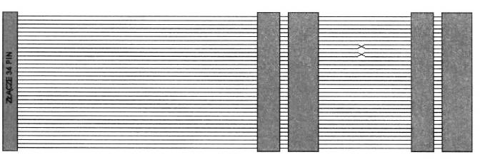
Pytanie nr 32
Zdjęcie przedstawia płytę główną komputera. Strzałką oznaczono
A. gniazdo zasilania do płyty ATX
B. gniazdo zasilania do płyty AT
C. połączenie do dysku IDE
D. połączenie do dysku SCSI

Pytanie nr 33
Przy pomocy taśmy 60-pinowej przedstawionej na rysunku podłącza się do płyty głównej komputera
A. tylko dyski SCSI
B. tylko dyski EIDE
C. napędy ATAPI
D. wszystkie powyższe urządzenia

Pytanie nr 34
NIEWŁAŚCIWE podłączenie taśmy sygnałowej do napędu dyskietek spowoduje
A. trwałe uszkodzenie napędu
B. błędy w zapisie na dyskietce
C. niemożność pracy z napędem
D. problemy z uruchomieniem komputera.
Pytanie nr 35
Tabela przedstawia parametry trzech dysków twardych standardu Ultra320 SCSI. Dyski te mogą pracować z maksymalnym transferem wewnętrznym
A. 132 MB/s
B. 320MB/S
C. 200MB/S
D. 320 GB/s
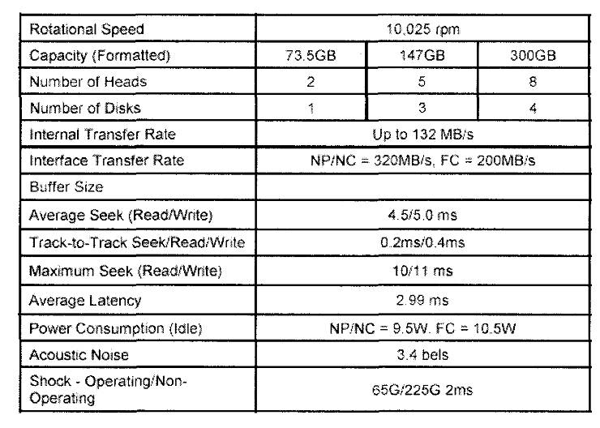
Pytanie nr 36
Na zdjęciu przedstawiono kartę
A. graficzną AGP
B. graficzną PCI
C. telewizyjną PCI Express
D. telewizyjną EISA

Pytanie nr 37
Blok funkcjonalny RAMDAC na schemacie blokowym przedstawia
A. przetwornik cyfrowo-analogowy z pamięcią RAM
B. przetwornik analogowo-cyfrowy z pamięcią RAM
C. pamięć RAM karty graficznej
D. pamięć ROM karty graficznej
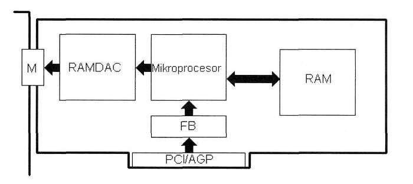
Pytanie nr 38
Który z rodzajów macierzy RAID oferuje tzw. mirroring dysków?
A. RAID-0
B. RAID-1
C. RAID-2
D. RAID-5
Pytanie nr 39
Liczbami 25 i 27, na przedstawionej płycie głównej komputera, oznaczono złącza
A. PS 2
B. RS 232
C. USB
D. LPT
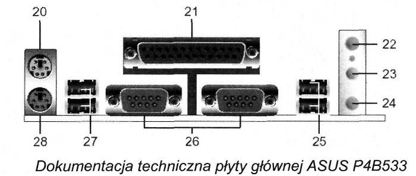
Pytanie nr 40
Blok funkcjonalny oznaczony DSP w zamieszczonym schemacie blokowym to
A. bufor RAM
B. mikroprocesor karty dźwiękowej
C. przetwornik cyfrowo-analogowy z pamięcią RAM
D. przetwornik analogowo-cyfrowy z pamięcią RAM

Pytanie nr 41
Komputery przenośne są z reguły wyposażone w bezprzewodowe sieci LAN. Ograniczenia ich użytkowania dotyczą emisji fal radiowych mogących zakłócać działanie innych, ważnych dla bezpieczeństwa, urządzeń
A. w pociągu
B. w samolocie
C. w biurze
D. w mieszkaniu
Pytanie nr 42
Na zdjęciu przedstawiono
A. modem kablowy
B. kartę telewizyjną
C. kartę sieci bezprzewodowej
D. moduł łączący komputer z UPS

Pytanie nr 43
Zerowanie rejestrów procesora odbywa się poprzez
A. użycie sygnału RESET
B. wyzerowanie bitów rejestru flag
C. ustawienie parametru w BIOS-ie
D. ustawienie licznika rozkazów na adresie zerowym
Pytanie nr 44
Do porównywania liczb binarnych służą
A. sumatory
B. komparatory
C. multipleksery
D. demultipleksery
Pytanie nr 45
Na podstawie nazw sygnałów sterujących określ funkcję podzespołu komputera oznaczonego na rysunku symbolem X
A. Układ generatorów programowalnych
B. Zegar czasu rzeczywistego
C. Kontroler przerwań
D. Kontroler DMA

Pytanie nr 46
Który z podzespołów komputera przy wyłączonym zasilaniu przechowuje program rozpoczynający ładowanie systemu operacyjnego?
A. CPU
B. RAM
C. ROM
D. I/O
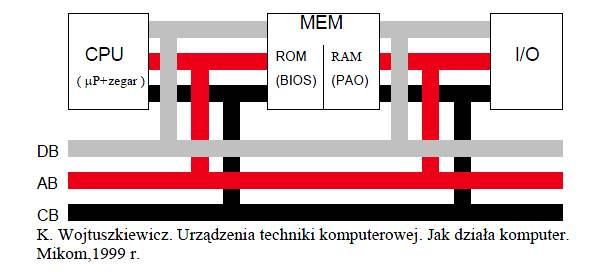
Pytanie nr 47
Zdjęcie przedstawia
A. wentylator procesora
B. wentylator karty graficznej
C. chłodzenie aktywne chipsetu
D. chłodzenie pasywne chipsetu
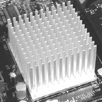
Pytanie nr 48
Monitor CRT łączy się z kartą graficzną za pomocą złącza
A. PCMCIA
B. D-USB
C. D-SUB
D. BNC
Pytanie nr 49
Rejestr mikroprocesora zwany licznikiem rozkazów zawiera
A. liczbę rozkazów wykonanych przez procesor do danego momentu
B. liczbę rozkazów pozostałych do wykonania do końca programu
C. adres rozkazu przeznaczonego do wykonania jako następny
D. liczbę cykli zegara liczoną od początku pracy programu
Pytanie nr 50
Układ RAMDAC
A. zawiera konwerter analogowo-cyfrowy
B. stanowi stopień wyjściowy karty graficznej
C. jest charakterystyczny dla standardu ATA
D. jest charakterystyczny dla standardu S-ATA
Pytanie nr 51
Jaką liczbę dziesiętną zapisano na jednym bajcie w kodzie znak – moduł: 1 1111111
A. –100
B. –127
C. 128
D. 256
Pytanie nr 52
Sumą dwóch liczb binarnych 1101011 i 1001001 jest liczba dziesiętna
A. 402
B. 201
C. 180
D. 170
Pytanie nr 53
Czynności samokontrolujące komputer po włączeniu zasilania oznaczone są skrótem
A. POST
B. BIOS
C. CPU
D. MBR
Pytanie nr 54
Magistrala, która łączy w komputerze procesor z kontrolerem pamięci, składająca się z szyny adresowej, szyny danych i linii sterujących, nosi nazwę
A. AGP – Accelerated Graphics Port
B. FSB – Front Side Bus
C. ISA – Industry Standard Architecture
D. PCI – Peripheral Component Interconnect
Pytanie nr 55
Które złącze płyty głównej komputera służy do zainstalowania przedstawionej na zdjęciu karty graficznej?
A. ISA
B. PCI
C. AGP
D. PCI-E
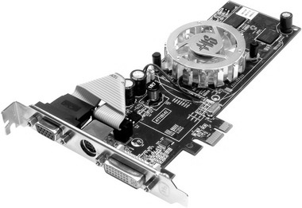
Pytanie nr 56
Który z portów na panelu tylnym komputera oznacza się przedstawionym symbolem?
A. COM
B. LPT
C. RJ45
D. USB
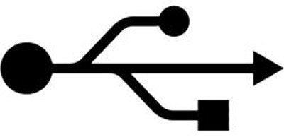
Pytanie nr 57
Jak nazywa się port panelu tylnego komputera zamieszczony na rysunku?
A. FIRE WIRE
B. D-SUB
C. HDMI
D. DVI

Pytanie nr 58
Jaki zestaw kolorów zawiera tryb CMYK?
A. Błękitny, purpurowy, żółty i czarny
B. Czerwony, zielony, żółty i granatowy
C. Czerwony, zielony, niebieski i czarny
D. Czerwony, purpurowy, żółty i karmelowy
Pytanie nr 59
Co oznacza znajdujący się w dokumentacji technicznej płyty głównej parametr LGA 775?
A. Typ gniazda procesora
B. Typ chipsetu płyty
C. Rodzaj obsługiwanych pamięci
D. Rodzaj karty graficznej
Pytanie nr 60
Przedstawione w ramce parametry katalogowe dotyczą dysku twardego
A. posiadającego 4 talerze
B. z pamięcią cache 12 MB
C. o pojemności dysku 32 MB
D. o maksymalnym transferze zewnętrznym 300 MB/s

Pytanie nr 61
Do połączenia kamery cyfrowej posiadającej interfejs IEEE 1394 (FireWire), z komputerem stosuje się kabel z wtyczką przedstawioną na zdjęciu
A. A
B. B
C. C
D. D

Pytanie nr 62
Na zdjęciu, strzałką wskazano gniazdo interfejsu
A. COM
B. FDD
C. IDE
D. LPT
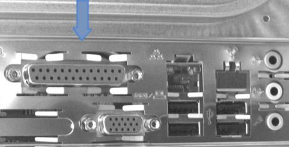
Pytanie nr 63
Na zdjęciu przedstawiono gniazda należące do karty
A. sieciowej
B. telewizyjnej
C. dźwiękowej
D. faksmodemowej
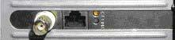
Pytanie nr 64
Nazwa "PIO Mode" dotyczy trybu pracy
A. pamięci
B. modemu
C. kanału IDE
D. napędu FDD
Pytanie nr 65
Liczba 257 dziesiętnie to
A. 1 0000 0001 dwójkowo
B. 1000 0000 dwójkowo
C. FF szesnastkowo
D. F0 szesnastkowo
Pytanie nr 66
Liczba szesnastkowa: FFFF w systemie dwójkowym ma postać
A. 1111 1111 1111 1111
B. 1111 0000 0000 0111
C. 0010 0000 0000 0111
D. 0000 0000 0000 0000
Pytanie nr 67
Jaka drukarka powinna być zastosowana w dziale sprzedaży hurtowni materiałów budowlanych do drukowania faktur na papierze samokopiującym, tak aby uzyskać na nim kopie wydruku?
A. Igłowa
B. Laserowa
C. Atramentowa
D. Sublimacyjna
Pytanie nr 68
Drugi monitor CRT podłączony do zestawu komputerowego służy do
A. kalibracji danych
B. przetwarzania danych
C. wyprowadzania informacji
D. przechowywania informacji
Pytanie nr 69
Ile dział elektronowych posiada matryca LCD?
A. 3
B. 2
C. 1
D. 0
Pytanie nr 70
Pamięć podręczna określana jest nazwą
A. Chipset
B. Cache
C. EIDE
D. VLB
Pytanie nr 71
Pamięć nieulotna, elektrycznie kasowana i programowana określana jest skrótem
A. IDE
B. ROM
C. RAM
D. EEPROM
Pytanie nr 72
Ustawienie zworek na dyskach z interfejsem IDE odpowiada za
A. rodzaj interfejsu dyskowego
B. prędkość obrotową dysku
C. napięcie zasilania silnika
D. tryb pracy dysku
Pytanie nr 73
Koprocesor (Floating Point Unit) w komputerze służy do wykonywania
A. podprogramów
B. operacji na liczbach całkowitych
C. operacji na liczbach naturalnych
D. operacji zmiennoprzecinkowych
Pytanie nr 74
Na płycie głównej pokazanej na schemacie, moduły pamięci RAM można zainstalować w gnieździe oznaczonym cyfrą
A. 1
B. 2
C. 3
D. 4

Pytanie nr 75
W czasie uruchamiania (krótko po teście POST) komputer zawiesza się. Co może być przyczyną takiej usterki?
A. Zbyt dużo ikon na pulpicie
B. Źle skonfigurowana drukarka
C. Brak podłączonej myszki komputerowej
D. Niewłaściwe napięcie zasilania procesora
Pytanie nr 76
Rysunek przedstawia wejście typu
A. USB
B. LPT
C. COM
D. FireWire

Pytanie nr 77
Na rysunku przedstawiono zrzut ekranu z przeprowadzonego testu
A. czasu oczekiwania pamięci
B. czasu dostępu do dysku twardego
C. czasu dostępu do napędu optycznego
D. czasu opróżniania buforu systemowego
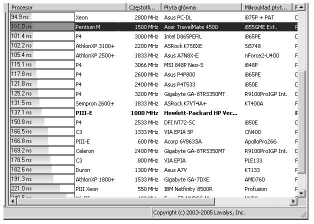
Pytanie nr 78
Przedstawiony symbol odnosi się do urządzeń
A. USB
B. LPT
C. SCSI
D. IEEE-1394

Pytanie nr 79
Z jaką najniższą efektywną częstotliwością taktowania mogą współpracować pamięci DDR2?
A. 800 MHz
B. 533 MHz
C. 333 MHz
D. 233 MHz
Pytanie nr 80
Pamięci DDR2 zasilane są napięciem
A. 1,0 V
B. 1,4 V
C. 1,8 V
D. 2,5 V
Pytanie nr 81
Na zdjęciu przedstawiono kość pamięci
A. RIMM
B. SIMM
C. SDRAM
D. RAMBUS
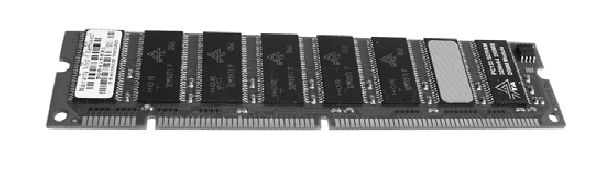
Pytanie nr 82
Wartość liczby 1101 0100 0111 w kodzie szesnastkowym wynosi
A. C27
B. D43
C. C47
D. D47
Pytanie nr 83
Na zdjęciu jest widoczny tylny panel komputera. Jak nazywa się wejście oznaczone strzałką?
A. LPT
B. USB
C. COM
D. FireWire

Pytanie nr 84
Które ze złączy oznaczonych strzałkami na schemacie monitora jest wejściem cyfrowym?
A. Złącze 1
B. Złącze 2
C. Złącza 1 i 2
D. Żadne ze złączy
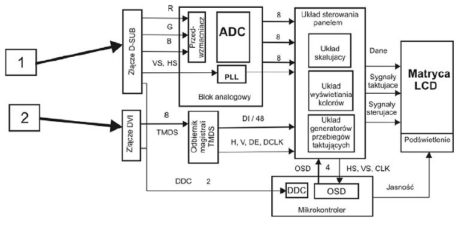
Pytanie nr 85
Jaką funkcję pełni układ zaznaczony strzałką na schemacie karty graficznej?
A. Oblicza kolory każdego wyświetlanego piksela
B. Ustala widoczność i przesłanianie się obiektów na ekranie
C. Wykonuje kalkulacje oświetlenia, uwzględniając położenie światła
D. Oblicza wygląd i położenie wielokątów, z których zbudowany jest obiekt
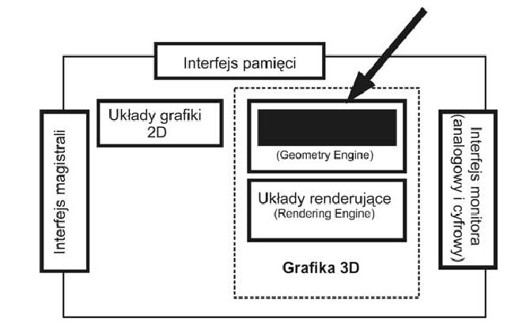
Pytanie nr 86
Rysunek przedstawia schemat blokowy karty dźwiękowej. Jaką funkcję pełni układ oznaczony cyfrą 1?
A. Wzmacnia sygnał wejściowy
B. Wzmacnia sygnał wyjściowy
C. Zamienia sygnał analogowy na cyfrowy
D. Zamienia sygnał cyfrowy na analogowy

Pytanie nr 87
Procesor RISC to procesor
A. z pełną listą rozkazów
B. z główną listą rozkazów
C. z kompleksową listą rozkazów
D. ze zredukowaną listą rozkazów
Pytanie nr 88
Procesor Athlon 2800+ to
A. procesor firmy Intel taktowany częstotliwością 2,8 GB
B. procesor firmy AMD taktowany częstotliwością 2,8 GB
C. procesor firmy AMD o wydajności podobnej do procesora Pentium 4 taktowanego częstotliwością 2,8 GHz
D. procesor firmy Intel o wydajności podobnej do procesora Pentium 4 taktowanego częstotliwością 2,8 GHz
Pytanie nr 89
Najbardziej zaawansowany tryb pracy portu równoległego standardu IEEE-1284 tworzący dwukierunkową magistralę 8-bitową mogącą przesyłać zarówno dane, jak i adresy z maksymalną szybkością transmisji do 2,3 MB/s, pozwalający na podłączenie do 64 urządzeń, to
A. EPP Mode
B. Byte Mode
C. Nibble Mode
D. Compatilibility Mode
Pytanie nr 90
We właściwościach karty graficznej w zakładce Zasoby jest określony jeden z zakresów pamięci dla tej karty od A0000h do BFFFFh. Wielkość ta oznacza obszar pamięci określony adresem fizycznym
A. 1010 0000 0000 0000 0000 – 1011 1111 1111 1111 1111
B. 1011 0000 0000 0000 0000 – 1100 1111 1111 1111 1111
C. 1001 1111 1111 1111 1111 – 1010 0000 0000 0000 0000
D. 1100 1111 1111 1111 1111 – 1110 1111 1111 1111 1111
Pytanie nr 91
Numer przerwania przydzielony dla karty sieciowej został przedstawiony w postaci binarnej jako liczba 10101. Jaka to liczba dziesiętna?
A. 15
B. 20
C. 21
D. 41
Pytanie nr 92
Po włączeniu komputera procedura POST pokazuje 512 MB RAM. Na karcie właściwości ogólnych systemu operacyjnego Windows widnieje wartość 480 MB RAM. Co jest przyczyną tej różnicy?
A. System operacyjny jest źle zainstalowany i nie obsługuje całego obszaru pamięci
B. Jest źle przydzielony rozmiar pliku stronicowania w ustawieniach pamięci wirtualnej
C. Jedna z kości pamięci jest uszkodzona lub jest uszkodzone jedno z gniazd pamięci RAM na płycie głównej
D. W komputerze znajduje się karta graficzna zintegrowana z płytą główną wykorzystująca część pamięci RAM
Pytanie nr 93
Firma potrzebuje drukarki służącej do drukowania trwałych kodów kreskowych oraz etykiet na folii i powierzchniach z tworzyw sztucznych. Jaką drukarkę musi zakupić?
A. Igłową
B. Termiczną
C. Mozaikową
D. Termotransferową
Pytanie nr 94
W przedsiębiorstwie należy cyklicznie tworzyć kopie bezpieczeństwa dużej ilości danych, znajdujących się na serwerze, rzędu kilkuset GB. Jakie urządzenie najlepiej wykorzystać do tego celu?
A. Streamer
B. Macierz RAID1
C. Nagrywarkę CD
D. Nagrywarkę DVD
Pytanie nr 95
Zamontowany w komputerze dysk ma zostać podzielony na partycje. Podaj maksymalną liczbę partycji rozszerzonych, możliwych do utworzenia na jednym dysku
A. 1
B. 2
C. 3
D. 4
Pytanie nr 96
Jakie oznaczenie zgodnie z Dyrektywami Rady Europy musi posiadać komputer, by mógł być dopuszczony do sprzedaży na terenie Polski?
A. A
B. B
C. C
D. D
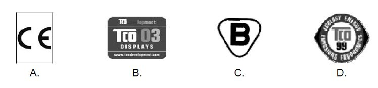
Pytanie nr 97
Jaką cyfrą został oznaczony procesor na schemacie płyty głównej komputera?
A. 1
B. 2
C. 3
D. 4

Pytanie nr 98
Na rysunku przedstawiono symbol układu cyfrowego
A. dekodera priorytetu
B. kodera priorytetu
C. multipleksera priorytetu
D. demultipleksera priorytetu
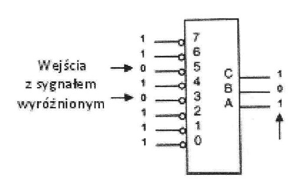
Pytanie nr 99
Znajdujący się w dokumentacji technicznej płyty głównej symbol: "LGA 775" oznacza typ
gniazda dla procesorów:
A. których obudowa posiada piny
B. których obudowa posiada pola dotykowe
C. które współpracują z szyną systemową o częstotliwości taktowania maksymalnie do 1 333 MHz.
D. które zawiera mniej połączeń zasilających niż gniazdo dla procesorów w obudowie PGA.
Pytanie nr 100
Jaką kartę rozszerzeń komputera przedstawiono na zdjęciu?
A. sieciową
B. graficzną
C. dźwiękową
D. telewizyjną (TV)
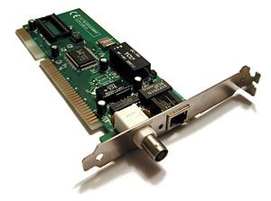
Pytanie nr 101
Współcześnie pamięci podręczne procesora drugiego poziomu (ang. "L-2 cache") wykonane są z układów pamięci
A. ROM
B. DRAM
C. SRAM
D. EEPROM
Pytanie nr 102
fps (ang. frames per second) bezpośrednio odnosi się do
A. płynności wyświetlania ruchomych obrazów
B. prędkości przesyłania danych do dysku w standardzie SATA
C. wydajności układów pamięci RAM
D. efektywności przepływu informacji na magistrali systemowej
Pytanie nr 103
W tabeli zamieszczono dane katalogowe procesora AMD Athlon 1333 Model 4 Thunderbird. Z jaką częstotliwością realizowane są przesłania międzyrejestrowe?
A. 133 MHz
B. 266 MHz
C. 1333 MHz
D. 2666 MHz

Pytanie nr 104
Suma liczb szesnastkowych: 4C + C4 zapisana w systemie dziesiętnym wynosi
A. 270
B. 271
C. 272
D. 273
Pytanie nr 105
Liczbie 16 bitowej 0011110010101110 zapisanej w systemie dwójkowym odpowiada w systemie szesnastkowym liczba
A. 3CAE
B. 3CBE
C. 3DAE
D. 3DFE
Pytanie nr 106
Do zbudowania programowej macierzy dyskowej RAID-1 należy użyć minimum
A. 1 dysku podzielonego na dwie partycje
B. 2 dysków
C. 3 dysków
D. 4 dysków
Pytanie nr 107
Monitor powinien spełniać standard
A. TN GNS
B. ISO-9N01
C. TCO Energy66.
D. EPA Energy Star
Pytanie nr 108
Symbol graficzny odnosi się do standardu urządzeń
A. LPT
B. USB
C. SCSI-12
D. FireWire

Pytanie nr 109
Zdjęcie przedstawia 168-stykową pamięć
A. SIPP
B. SIMM
C. RIMM
D. SDRAM
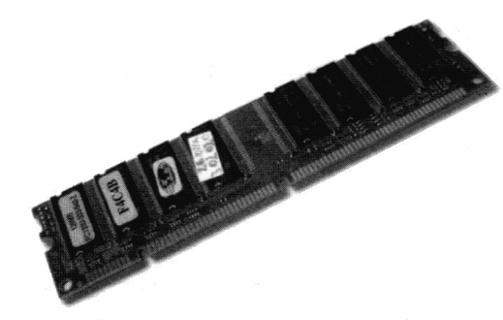
Pytanie nr 110
Rysunek przedstawia schemat blokowy zasilacza
A. awaryjnego (UPS)
B. impulsowego komputera
C. analogowego komputera
D. impulsowego matrycy RAID

Pytanie nr 111
Na schemacie element odpowiedzialny za dekodowanie instrukcji jest oznaczony cyfrą
A. 1
B. 2
C. 3
D. 6

Pytanie nr 112
Na schemacie blokowym karty dźwiękowej element zmieniający sygnał analogowy na sygnał cyfrowy jest oznaczony cyfrą
A. 2
B. 3
C. 4
D. 5

Pytanie nr 113
Z nośników optycznych największą pojemność ma płyta
A. CD
B. DVD
C. Blu-Ray
D. DVD-RAM
Pytanie nr 114
W którym z rejestrów wewnętrznych procesor zapisuje dodatkowe cechy wyniku wykonywanej operacji?
A. W akumulatorze
B. W liczniku rozkazów
C. We wskaźniku stosu
D. W rejestrze flagowym
Pytanie nr 115
Który z portów panelu tylnego płyty głównej jest oznaczany w dokumentacji jako port standardu RS232C?
A. COM
B. LPT
C. PS/2
D. USB
Pytanie nr 116
Termin SLI dotyczy
A. dysków twardych
B. kart graficznych
C. kart sieciowych
D. modemów
Pytanie nr 117
W tabeli zamieszczono podstawowe dane techniczne dwóch interfejsów. Wynika z nich, że SATA w porównaniu z ATA ma
A. mniejszą przepustowość i mniejszą liczbę wyprowadzeń w złączu
B. większą przepustowość i większą liczbę wyprowadzeń w złączu
C. większą przepustowość i mniejszą liczbę wyprowadzeń w złączu
D. mniejszą przepustowość i większą liczbę wyprowadzeń w złączu

Pytanie nr 118
W tabeli przedstawiono parametry katalogowe czterech twardych dysków. Największą średnią szybkość odczytu danych zapewnia dysk
A. A
B. B
C. C
D. D
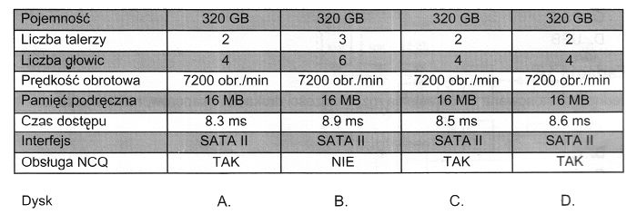
Pytanie nr 119
Tablica partycji zakończona jest sygnaturą (ciągiem bitów) 55AA (szesnastkowo). Odpowiadająca jej wartość dwójkowa to
A. 1,0101010010101E+015
B. 1,0100101101001E+015
C. 101101001011010
D. 101010110101010
Pytanie nr 120
Kamera cyfrowa przy zgrywaniu filmu transmituje na dysk 220 MB na minutę. Na podstawie diagramu wybierz interfejs o najmniejszej szybkości transferu zapewniający warunki takiej transmisji
A. USB 1
B. 1394a
C. USB 2
D. 1394b

Pytanie nr 121
Jednoczesne zwiększenie szybkości operacji (zapis/odczyt) i bezpieczeństwa przechowywania danych umożliwia macierz dyskowa
A. RAID 0
B. RAID 1
C. RAID 3
D. RAID 50
Pytanie nr 122
Na zdjęciu przedstawiono złącza karty graficznej. Złącze cyfrowe to
A. wyłącznie złącze 1
B. wyłącznie złącze 2
C. wyłącznie złącze 3
D. złącze 1 i 2

Pytanie nr 123
Które złącze na tylnym panelu komputera oznaczane jest przedstawionym symbolem graficznym?
A. HDMI
B. USB
C. PS/2
D. 8P8C

Pytanie nr 124
Przedstawiony symbol graficzny oznacza
A. generator dźwięku
B. filtr dolnoprzepustowy
C. przetwornik cyfrowo-analogowy
D. przetwornik analogowo-cyfrowy

Pytanie nr 125
Na schemacie działania skanera numerem 1 oznaczono element, którego zadaniem jest
A. wzmacnianie sygnału optycznego
B. wzmacnianie sygnału elektrycznego
C. zamiana sygnału analogowego na sygnał cyfrowy
D. zamiana sygnału optycznego na sygnał elektryczny
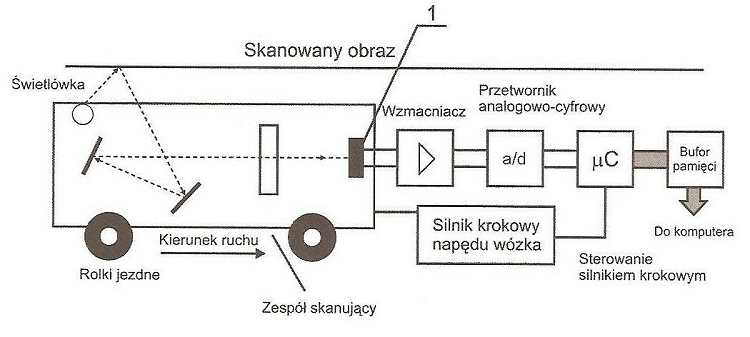
Pytanie nr 126
Element oznaczony numerem 1 na schemacie blokowym procesora jest odpowiedzialny za
A. przechowywanie wyniku operacji
B. wykonywanie operacji na blokach danych
C. wykonywanie operacji na liczbach zmiennoprzecinkowych
D. przechowywanie dodatkowych informacji o wykonywanej operacji

Pytanie nr 127
Element oznaczony numerem 1 na schemacie blokowym karty graficznej
A. zawiera matrycę znaków trybu tekstowego
B. zamienia sygnał cyfrowy na sygnał analogowy
C. generuje sygnał RGB na wyjście karty graficznej
D. przechowuje dane wyświetlane, w trybie graficznym

Pytanie nr 128
Który z elementów oznaczonych numerami od 1 do 4, przedstawionych na schemacie blokowym frame grabbera i opisanym we fragmencie dokumentacji technicznej, służy do wymiany danych z innymi urządzeniami przetwarzającymi obraz wideo bez niepotrzebnego obciążania magistrali PCI?
A. 1
B. 2
C. 3
D. 4

Pytanie nr 129
Przedstawione parametry katalogowe dotyczą routera posiadającego pamięć masową
A. 3 MB
B. 32 MB
C. 64 MB
D. 680 MB
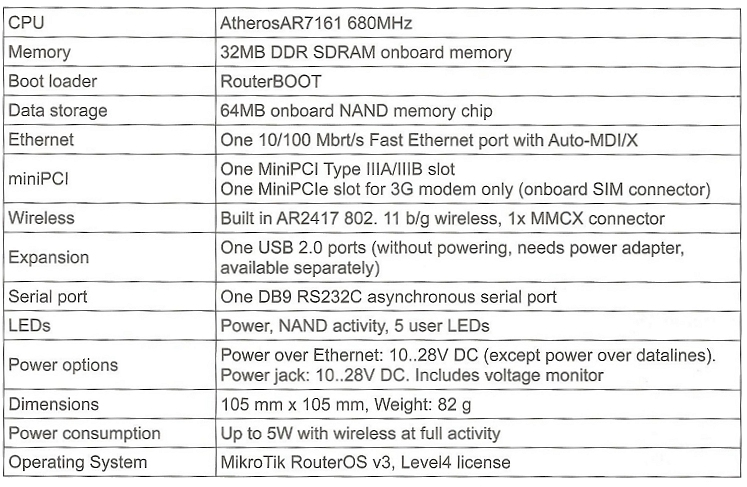
Pytanie nr 130
Ile maksymalnie dysków twardych można podłączyć bezpośrednio do płyty głównej, której fragment specyfikacji przedstawiono w ramce?
A. 2
B. 4
C. 5
D. 8
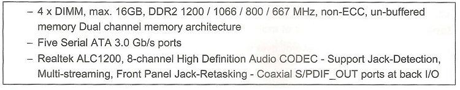
Pytanie nr 131
Zakres we/wy kontrolera DMA zapisany w postaci heksadecymalnej wynosi 0094-009F, a w systemie dziesiętnym
A. 73-249
B. 148-159
C. 1168-3984
D. 2368-2544
Pytanie nr 132
Adres komórki pamięci podano w postaci binarnej 1110001110010100. W systemie szesnastkowym adres zapisuje się w postaci
A. 493
B. 7E+092
C. D281
D. E394
Pytanie nr 133
W ramce umieszczono wyniki badania dysku twardego. Jakie działania należy podjąć po ich analizie, aby poprawić sprawność dysku?
A. Oczyścić dysk
B. Sformatować dysk
C. Zdefragmentować dysk
D. Podzielić dysk na partycje
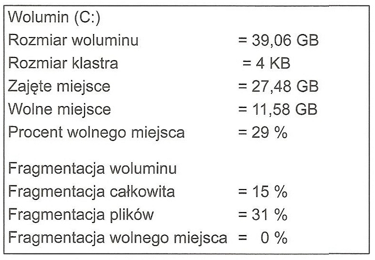
Pytanie nr 134
Firma zajmująca się sprzątaniem musi drukować faktury tekstowe w czterech egzemplarzach jednocześnie, na papierze samokopiującym. Jaką drukarkę powinna wybrać?
A. Igłową
B. Laserową
C. Atramentową
D. Termosublimacyjną
Pytanie nr 135
W biurze rachunkowym znajduje się w jednym pomieszczeniu sześć komputerów podłączonych do koncentratora kablem UTP Cat 5e. Pracownicy użytkujący te komputery muszą mieć możliwość drukowania bardzo dużej ilości (powyżej 5 tys. stron miesięcznie) dokumentów monochromatycznych. Aby koszty zakupu sprzętu i eksploatacji były jak najniższe należy wybrać:
A. laserową drukarkę sieciową z portem RJ45
B. atramentowe urządzenie wielofunkcyjne ze skanerem i faksem
C. laserowe drukarki lokalne podłączone do każdego z komputerów
D. drukarkę atramentową podłączoną do jednego z komputerów i udostępnianą w sieci
Pytanie nr 136
Materiałem eksploatacyjnym dla kolorowej drukarki laserowej jest
A. przetwornik CMOS
B. podajnik papieru
C. kartridż z tonerem
D. pamięć wydruku
Pytanie nr 137
W jednostce ALU do akumulatora została wpisana liczba dziesiętna 240. Jaka jest jej binarna reprezentacja?
A. 11110000
B. 11111000
C. 11111100
D. 11111110
Pytanie nr 138
Plik ma rozmiar 2 KiB. Jest to
A. 2000 bitów
B. 2048 bitów
C. 16000 bitów
D. 16384 bitów
Pytanie nr 139
Wskaż właściwą kolejność operacji przygotowujących nowy laptop do pracy.
A. Montaż baterii, podłączenie zewnętrznego zasilania sieciowego, włączenie laptopa, instalacja systemu operacyjnego, wyłączenie laptopa po instalacji systemu operacyjnego
B. Podłączenie zewnętrznego zasilania sieciowego, włączenie laptopa, instalacja systemu operacyjnego, montaż baterii, wyłączenie laptopa po instalacji systemu operacyjnego
C. Podłączenie zewnętrznego zasilania sieciowego, włączenie laptopa, montaż baterii, instalacja systemu operacyjnego, wyłączenie laptopa po instalacji systemu operacyjnego
D. Włączenie laptopa, montaż baterii, instalacja systemu operacyjnego, podłączenie zewnętrznego zasilania sieciowego, wyłączenie laptopa po instalacji systemu operacyjnego
Pytanie nr 140
W dokumentacji jednego z elementów składowych komputera zamieszczono informację, że urządzenie wspiera OpenGL. Dokumentacja dotyczy
A. mikroprocesora.
B. karty sieciowej.
C. karty graficznej.
D. dysku twardego.
Pytanie nr 141
Niskopoziomowe formatowanie dysku IDE HDD
A. tworzy partycję rozszerzoną.
B. tworzy partycję podstawową.
C. jest wykonywane przez producenta dysku.
D. umieszcza program rozruchowy w MBR
Pytanie nr 142
Przy uruchamianiu komputera pojawia się komunikat "CMOS checksum error press F1 to continue press DEL to setup". Wciśnięcie klawisza DEL spowoduje
A. usunięcie pliku setup
B. wejście do BIOS-u komputera
C. skanowanie zawartości pamięci CMOS
D. przejście do konfiguracji systemu Windows
Pytanie nr 143
W dokumentacji płyty głównej jest informacja „Wsparcie dla S/PDIF Out”. Oznacza to, że dana płyta główna zawiera
A. cyfrowe złącze sygnału video
B. cyfrowe złącze sygnału audio
C. analogowe złącze sygnału wyjścia video
D. analogowe złącze sygnału wejścia video
Pytanie nr 144
Interfejs SLI (ang. Scalable Link Interface) służy do łączenia
A. dwóch kart graficznych
B. czytnika kart z płytą główną
C. napędu Blu-ray z kartą dźwiękową
D. karty graficznej z odbiornikiem TV
Pytanie nr 145
Jaki będzie koszt wymiany karty graficznej w komputerze, jeśli karta kosztuje 250 zł, jej wymiana zajmie pracownikowi serwisu 80 min, a każda rozpoczęta roboczo godzina kosztuje 50 zł?
A. 250 zł
B. 300 zł
C. 350 zł
D. 400 zł
Pytanie nr 146
Po uruchomieniu komputera pojawił się komunikat "Non-system disk or disk error. Replace and strike any key when ready". Przyczyną może być
A. brak pliku ntldr
B. uszkodzony kontroler DMA
C. skasowany BIOS komputera
D. dyskietka włożona do napędu
Pytanie nr 147
W drukarce laserowej do utrwalania wydruku wykorzystuje się
A. rozgrzane wałki
B. promienie lasera
C. taśmy transmisyjne
D. głowice piezoelektryczne
Pytanie nr 148
System S.M.A.R.T. służy do monitorowania pracy i wykrywania błędów
A. płyty głównej
B. kart rozszerzeń
C. dysków twardych
D. napędów płyt CD/DVD
Pytanie nr 149
Po zainstalowaniu Systemu Windows 7 została w BIOS komputera zmieniona konfiguracja dysku SATA z AHCI na IDE. Po ponownym uruchomieniu komputera system będzie
A. resetował się podczas uruchamiania
B. uruchamiał się bez zmian
C. działał szybciej
D. działał wolniej
Pytanie nr 150
Interfejsem umożliwiającym przesyłanie danych pomiędzy pokazaną na rysunku płyta główna, a urządzeniem zewnętrznym, bez równoczesnego zasilania urządzenia zewnętrznego poprzez interfejs jest
A. PCI
B. USB
C. PCIe
D. SATA

Pytanie nr 151
W dokumentacji technicznej procesora Intel Xeon Processor E3-1220, producent podaje następujące parametry: # of Cores: 4 # of Threads: 4 Clock Speed: 3.1 GHz Max Turbo Frequency: 3.4 GHz Intel Smart Cache: 8 MB DMI: 5 GT/s Instruction Set: 64 bit Instruction Set Extensions: SSE4.1/4.2, AVX Embedded Options Available: No Lithography: 32 nm Max TDP: 80 W. Oznacza to, że Menedżer zadań systemu Windows będzie pokazywał historię użycia dla
A. 2 procesorów
B. 4 procesorów
C. 8 procesorów
D. 16 procesorów
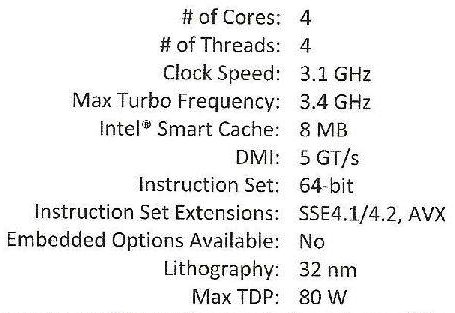
Pytanie nr 152
W hurtowni materiałów budowlanych istnieje konieczność jednoczesnego drukowania faktur w kilku egzemplarzach. Należy użyć drukarki
A. igłowej
B. laserowej
C. atramentowej
D. termosublimacyjnej
Pytanie nr 153
Złącze IrDA do komunikacji bezprzewodowej jest
A. złączem pozwalającym transmitować dane na odległość 100m
B. rozwinięciem systemu BlueTooth
C. złączem szeregowym
D. złączem radiowym
Pytanie nr 154
Na który z nośników pamięci zewnętrznej, nie przedostanie się wirus podczas odczytywania jego zawartości?
A. na kartę SD
B. na pamięć Flash
C. na płytę DVD-ROM
D. na dysk zewnętrzny
Pytanie nr 155
Adres MAC karty sieciowej zapisany w postaci binarnej wynosi 00000000-00010100-10000101-10001011-01101011-10001010. Który z zapisów jest postacią heksadecymalną tego adresu?
A. 00-12-85-8B-6B-8A
B. 00-14-85-8B-6B-8A
C. 00-14-85-8C-6C-8B
D. 00-16-83-8C-6B-8B
Pytanie nr 156
Któremu zapisowi heksadecymalnemu odpowiada zapis binarny adresu komórki pamięci 0111 1100 1111 0110?
A. 5AF3
B. 7BF5
C. 7CF6
D. 5DF6
Pytanie nr 157
Jaką funkcję pełni podzespół wskazany strzałką na schemacie chipsetu płyty głównej ?
A. Umożliwia połączenie i korzystanie z pamięci DDR 400 jako DUAL Channel w celu zachowania zgodności z DUAL Channel DDR2 800
B. Umożliwia korzystanie z pamięci DDR3-800 i DDR2-800 jako DUAL Channel
C. Pozwala wykorzystać magistralę o szerokości 128 bitów do przesyłania danych pomiędzy pamięcią RAM, a kontrolerem pamięci
D. Pozwala wykorzystać typowe pamięci DDR SDRAM

Pytanie nr 158
Na rysunku przedstawiono gniazdo
A. DVI
B. HDMI
C. D-SUB
D. FIRE WIRE
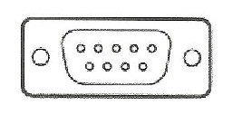
Pytanie nr 159
W czasie przeprowadzania procedury POST na ekranie pojawia się komunikat "CMOS Battery State Low". Co w takiej sytuacji należy zrobić, aby komunikat nie pojawił się w przyszłości
A. Podłączyć zasilanie sieciowe
B. Wymienić akumulatory laptopa na nowe
C. Wymienić baterię na płycie głównej komputera
D. Ustawić poprawnie opcje konfiguracyjne CMOS dotyczące zasilania
Pytanie nr 160
Procedura POST (Power-On Self Test) uruchamiana przez BIOS komputera odpowiada za
A. włączenie lub wyłączenie automatycznego rozpoznawania urządzeń pracujących w standardzie P&P
B. predefiniowane typy schematów zarządzania energią oraz daje możliwość zdefiniowania własnych ustawień
C. kolejność przeszukiwania zainstalowanych urządzeń w celu znalezienia sektora startowego podczas uruchamiania komputera
D. przeprowadzenie testu poprawności działania podstawowych podzespołów komputera, wykonywanego przy każdym uruchomieniu lub restarcie
Pytanie nr 161
Element oznaczony cyfrą 1 na schemacie karty dźwiękowej
A. zamienia sygnał audio na sygnał wideo
B. usuwa dźwięk pochodzący z kilku źródeł
C. eliminuje szumy na linii, wykorzystując krótkie próbki szumu.
D. tworzy dźwięk o odpowiednim czasie trwania, wykorzystując krótkie próbki dźwięku

Pytanie nr 162
Na schemacie, przedstawiającym budowę modemu, za funkcję modulacji i demodulacji odpowiada podzespół oznaczony cyfrą
A. 1
B. 2
C. 3
D. 4
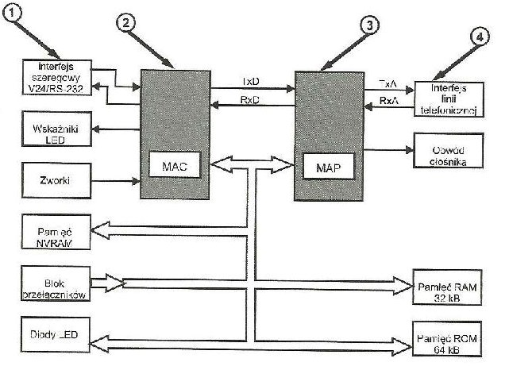
Pytanie nr 163
Główny rekord rozruchowy dysku twardego to
A. MBR
B. BOOT
C. FDISK
D. NTLDR
Pytanie nr 164
Prefetching to
A. cecha systemu operacyjnego umożliwiająca równoczesne wykonanie kilku procesów
B. wykonanie przez procesor fazy pobrania następnego rozkazu w trakcie realizacji fazy wykonania rozkazu poprzedniego
C. sposób pracy procesora polegający na przejściu do tryby pracy procesora Intel 8086
D. właściwość procesorów umożliwiająca korzystanie ze wspólnych danych przez rdzenie, bez pośrednictwa pamięci umieszczonej na zewnątrz procesora
Pytanie nr 165
Dla dysku twardego, wartość współczynnika MTBF (Mean Time Between Failure) podawana jest w
A. latach
B. dniach
C. minutach
D. godzinach
Pytanie nr 166
W dokumentacji technicznej płyty głównej jest zapis Supports up to Athlon XP 3000+ procesor. Oznacza on, że płyta główna obsługuję procesory Athlon.
A. zgodnie z mobile Athlon 64
B. nie nowsze niż Athlon XP 3000+
C. wszystkie o częstotliwości poniżej 3000 MHz
D. wszystkie o częstotliwości powyżej 3000 MHz
Pytanie nr 167
W modelu RGB, w systemie szesnastkowym, kolor jest zapisany następująco: ABCDEF. Natężenie koloru niebieskiego w tym zapisie ma wartość dziesiętną
A. 171
B. 186
C. 205
D. 239
Pytanie nr 168
Który zapis w systemie binarnym odpowiada liczbie 111 zapisanej w systemie dziesiętnym?
A. 1101111
B. 1110111
C. 1111110
D. 1111111
Pytanie nr 169
Industry Standard Architecture jest standardem magistrali, zgodnie z którym szyna danych ma szerokość:
A. 128 bitów
B. 64 bitów
C. 32 bitów
D. 16 bitów
Pytanie nr 170
Która z wymienionych pamięci RAM wykorzystuje do przesyłania danych wznoszące i opadające zbocze sygnału zegarowego?
A. SIMM
B. SDR
C. DDR
D. SIPP
Pytanie nr 171
Na rysunku przedstawiono gniazdo:
A. DisplayPort
B. HDMI
C. SATA
D. DVI

Pytanie nr 172
Równoważnym zapisem 2^32 bajtów jest zapis:
A. 1 GiB
B. 2 GB
C. 4 GiB
D. 8 GB
Pytanie nr 173
Na płycie głównej uległa uszkodzeniu zintegrowana karta sieciowa. Komputer nie posiada
dysku twardego ani żadnych innych napędów takich jak stacja dysków czy CD-ROM. Klient
twierdzi, że w sieci firmowej komputery nie posiadają żadnych napędów i wszystko "czyta"
się z serwera. W celu zapewnienia utraconej funkcjonalności należy zamontować
A. w komputerze dysk twardy
B. w komputerze napęd CD-ROM
C. w gnieździe rozszerzeń kartę sieciową samodzielnie wspierającą funkcję Postboot Execution Enumeration
D. w gnieździe rozszerzeń kartę sieciową samodzielnie wspierającą funkcję Preboot Execution Environment
Pytanie nr 174
Podłączając drukarkę wyposażoną w złącze równoległe do komputera, który posiada tylko porty USB należy zainstalować adapter
A. USB na PS/2
B. USB na LPT
C. USB na COM
D. USB na RS-232
Pytanie nr 175
W czterech sklepach sprzedawany jest ten sam komputer w różnych cenach. Najtaniej można go nabyć w sklepie:
A. A
B. B
C. C
D. D
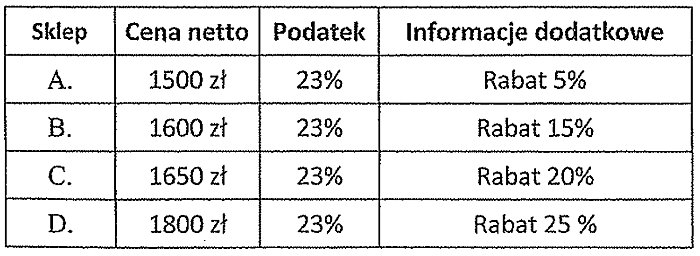
Pytanie nr 176
Przedstawiony na rysunku symbol graficzny oznacza opakowanie
A. zgodne z normą TCO
B. wielokrotnego użytku
C. nadającego się do recyklingu
D. wyprodukowane z surowców wtórnych
Pytanie nr 177
Bezprzewodową transmisję danych zapewnia standard, którego elementem jest interfejs
A. LFH60
B. HDMI
C. IrDA
D. DVI
Pytanie nr 178
Której liczbie dziesiętnej odpowiada liczba FF zapisana w systemie szesnastkowym?
A. 248
B. 250
C. 254
D. 255
Pytanie nr 179
Na fotografii przedstawiono
A. tusz
B. tuner
C. kartridż
D. taśmę barwiącą

Pytanie nr 180
Po uruchomieniu komputera pojawił się komunikat: Non-system disk or disk error. Replace and strike any key when ready. Przyczyną może być
A. brak pliku NTLDR
B. uszkodzony kontroler DMA
C. skasowany BIOS komputera
D. dyskietka włożona do napędu
Pytanie nr 181
Wewnętrzny dysk twardy IDE zasilany jest poprzez złącze typu
A. Molex
B. SATA
C. PCIe
D. ATX
Pytanie nr 182
Ile maksymalnie partycji podstawowych możemy utworzyć na dysku twardym z MBR?
A. 4
B. 8
C. 24
D. 26
Pytanie nr 183
Na dysku należy zapisać 100 tysięcy pojedynczych plików, każdy o rozmiarze 2570 bajtów. Zapisane pliki zajmą najmniej miejsca na dysku o jednostce alokacji wynoszącej
A. 8192 bajty
B. 4096 bajtów
C. 3072 bajty
D. 2048 bajtów
Pytanie nr 184
Po podłączeniu sprawnej klawiatury do dowolnego z portów USB nie można wybrać awaryjnego trybu uruchomienia systemu Windows. Mimo to, klawiatura po uruchomieniu systemu w normalnym trybie, działa prawidłowo. Wskazuje to na:
A. uszkodzony kontroler klawiatury
B. niepoprawne ustawienia BIOS-u
C. uszkodzone porty USB
D. uszkodzony zasilacz
Pytanie nr 185
Brak odporności na utratę danych z uwagi na fizyczną awarię jednego z dysków jest cechą
A. RAID 3
B. RAID 2
C. RAID 1
D. RAID 0
Pytanie nr 186
Suma liczb binarnych 1010 + 111 zapisana w systemie dziesiętnym wyniesie
A. 16
B. 17
C. 18
D. 19
Pytanie nr 187
Jednostka obliczeń zmiennoprzecinkowych to
A. FPU
B. ALU
C. RPU
D. AND
Pytanie nr 188
Przydzielaniem czasu procesora do określonych zadań zajmuje się
A. chipset
B. pamięć RAM
C. cache procesora
D. system operacyjny
Pytanie nr 189
Najkrótszy czas dostępu posiada
A. dysk twardy
B. pamięć USB
C. pamięć RAM
D. pamięć cache procesora
Pytanie nr 190
Przedstawiona na rysunku karta rozszerzeń posiada chłodzenie
A. aktywne
B. pasywne
C. wymuszone
D. symetryczne

Pytanie nr 191
Na rysunku przedstawiono złącze zasilania
A. stacji dyskietek
B. ATX12V zasilania procesora
C. dysków wewnętrznych SATA
D. Molex do dysków twardych
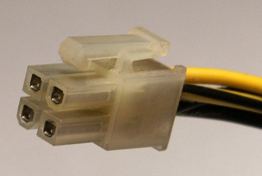
Pytanie nr 192
Głównym celem mechanizmu Plug and Play jest:
A. automatyczne uruchomienie ostatnio otwartej gry
B. automatyczne tworzenie kopii danych na nowo podłączonym nośniku pamięci
C. wykrycie nowo podłączonego sprzętu i automatycznie przydzielenie mu zasobów
D. automatyczne odinstalowanie sterowników, które przez dłuższy czas nie były używane
Pytanie nr 193
Zgodnie z zamieszczonym cennikiem, średni koszt wyposażenia stanowiska komputerowego wynosi:
A. 2000,00 zł
B. 4350,00 zł
C. 5000,50 zł
D. 6700,00 zł

Pytanie nr 194
Oznakowanie CE informuje, że
A. wyrób jest zgodny z normami ISO
B. wyrób jest wyprodukowany na terenie Unii Europejskiej
C. producent sprawdził produkt pod względem wydajności i ergonomii
D. wyrób spełnia wymagania pod względem bezpieczeństwa użytkowania, ochrony zdrowia i ochrony środowiska
Pytanie nr 195
Recykling można określić jako
A. odzysk
B. produkcję
C. segregację
D. oszczędność
Pytanie nr 196
Gorące podłączenie (hot-plug) oznacza, że podłączane urządzenie jest
A. sterowane temperaturą
B. kompatybilne z komputerem
C. sprawne po zainstalowaniu właściwych sterowników
D. sprawne zaraz po podłączeniu, bez konieczności wyłączania bądź restartowania systemu
Pytanie nr 197
Interfejsem wewnętrznym komputera jest
A. DVI
B. AGP
C. IrDA
D. RJ-45
Pytanie nr 198
Urządzeniem wskazującym jest
A. skaner
B. drukarka
C. pamięć USB
D. ekran dotykowy
Pytanie nr 199
Wielkość plamki monitora LCD jest równa
A. wielkości jednego piksela wyświetlanego na ekranie
B. wielkości obszaru na którym wyświetla się 1024 pikseli
C. odległości od początku jednego do początku następnego piksela
D. wielkości obszaru, na którym można wyświetlić wszystkie kolory obsługiwane przez monitor
Pytanie nr 200
Standardem komunikacji pomiędzy skanerem a programem graficznym jest
A. USB
B. OPC
C. SCAN
D. TWAIN
Pytanie nr 201
Ustawa z dnia 14 grudnia 2012r. o odpadach nakazuje
A. składowanie odpadów maksymalnie przez 1 rok
B. spalenie odpadów w jak najwyższej temperaturze
C. poddanie odpadów w pierwszej kolejności odzyskowi
D. neutralizację odpadów w dowolny sposób w jak najkrótszym czasie
Pytanie nr 202
W drukarce igłowej materiałem eksploatacyjnym jest
A. tusz
B. toner
C. pigment
D. taśma barwiąca
Pytanie nr 203
Która macierz RAID jest zbudowana w oparciu o replikację dwóch lub więcej dysków fizycznych?
A. RAID 0
B. RAID 1
C. RAID 3
D. RAID 5
Pytanie nr 204
Który interfejs pozwala przesyłać dane w postaci cyfrowej i analogowej pomiędzy komputerem a monitorem?
A. HDMI
B. DVI-I
C. DFP
D. DISPLAY PORT
Pytanie nr 205
Notacja #102816 oznacza zapis w systemie
A. dziesiętnym
B. dwójkowym
C. ósemkowym
D. szesnastkowym
Pytanie nr 206
Liczba 110011(2) zapisana w systemie dziesiętnym ma postać
A. 50
B. 51
C. 52
D. 53
Pytanie nr 207
Liczba 45(H) zapisana w systemie ósemkowym ma postać
A. 102
B. 105
C. 108
D. 110
Pytanie nr 208
Przerzutnik bistabilny przechowuje bit informacji w pamięci
A. SRAM
B. DRAM
C. SDRAM
D. DDR SDRAM
Pytanie nr 209
Dodatkowe cechy wyniku operacji wykonywanej przez jednostkę arytmetyczno - logiczną ALU zawiera
A. akumulator
B. wskaźnik stosu
C. rejestr flagowy
D. licznik rozkazów
Pytanie nr 210
Poprawę jakości skanowania można uzyskać poprzez zmianę
A. rozdzielczości
B. wielkości wydruku
C. formatu pliku wejściowego
D. rozmiaru skanowanego dokumentu
Pytanie nr 211
Który typ dysków jest podłączany do gniazda IDE płyty głównej komputera?
A. SSD
B. ATA
C. SCSI
D. FLASH
Pytanie nr 212
Standard podstawki procesora bez nóżek to
A. LGA
B. PGA
C. SPGA
D. CPGA
Pytanie nr 213
Pokazany na rysunku symbol graficzny oznacza złącze
A. DVI
B. COM
C. HDMI
D. FIRE WIRE
Pytanie nr 214
W którym typie macierzy, przestrzeń wszystkich dysków fizycznych jest widziana jako jeden dysk logiczny?
A. RAID 0
B. RAID 1
C. RAID 2
D. RAID 5
Pytanie nr 215
W dokumentacji technicznej procesora umieszczonego na płycie głównej komputera szybkość zegara podaje się w
A. s
B. kHz
C. GHz
D. GHz/s
Pytanie nr 216
Asynchronicznym interfejsem szeregowym zgodnym ze standardem RS-232 jest port
A. LPT
B. ECP
C. EPP
D. COM
Pytanie nr 217
Interfejs USB 3.0 umożliwia transfer danych z prędkością do
A. 120 MB/s
B. 400 Mb/s
C. 4 GB/s
D. 5 Gb/s
Pytanie nr 218
System oświetlenia oparty o trójkolorowe diody LED wykorzystują skanery typu
A. CIS
B. CCD
C. CMOS
D. CMYK
Pytanie nr 219
Jeżeli rozdzielczość myszy wynosi 200 dpi a monitora Full HD, to przeciągnięcie kursora w poprzek ekranu wymaga przesunięcia myszy o
A. 480 i
B. 1080 px
C. około 25 cm
D. około 35 cm
Pytanie nr 220
Technika zwana rytownictwem odnosi się do zasady działania plotera
A. tnącego
B. laserowego
C. solwentowego
D. grawerującego
Pytanie nr 221
Elementem eksploatacyjnym drukarki laserowej NIE JEST
A. bęben
B. głowica
C. wałek grzewczy
D. lampa czyszcząca
Pytanie nr 222
Klawiatura QWERTY umożliwiająca wprowadzenie znaków charakterystycznych dla języka polskiego nazywana jest również klawiaturą
A. polską
B. maszynistki
C. programisty
D. diakrytyczną
Pytanie nr 223
Do pomiaru wartości rezystancji służy
A. omomierz
B. watomierz
C. woltomierz
D. amperomierz
Pytanie nr 224
Symulowanie stanów logicznych obwodów cyfrowych umożliwia
A. sonometr
B. kalibrator
C. impulsator
D. sonda logiczna
Pytanie nr 225
Jeden długi i dwa krótkie sygnały dźwiękowe BIOS POST firmy AMI oraz AWARD oznaczają błąd
A. zegara systemowego
B. mikroprocesora
C. karty graficznej
D. karty sieciowej
Pytanie nr 226
Przyczyną awarii drukarki igłowej może być usterka
A. dyszy
B. termorezystora
C. elektromagnesu
D. elektrody ładującej
Pytanie nr 227
Które złącze karty graficznej NIE jest interfejsem cyfrowym?
A. DVI-D
B. HDMI
C. Display Port
D. D-SUB 15pin
Pytanie nr 228
Liczba 3FC7 zapisana w systemie dwójkowym będzie miała postać:
A. 11111111000111
B. 00111110010111
C. 01111111100011
D. 10111011110111
Pytanie nr 229
Koprocesor arytmetyczny, którego rolą w mikroprocesorze jest dokonywanie obliczeń na liczbach zmiennoprzecinkowych został na schemacie oznaczony cyfrą
A. 1
B. 2
C. 3
D. 4
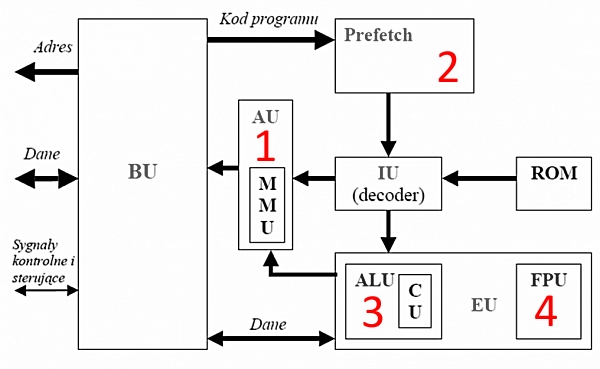
Pytanie nr 230
Standard ACPI BIOSu komputera odpowiada za
A. sprawdzanie poprawności działania podstawowych podzespołów płyty głównej
B. zmianę ustawień BIOSu
C. zarządzanie energią i konfiguracją
D. zapamiętanie kolejności bootowania
Pytanie nr 231
Dodatkowa funkcja mikroprocesora Intel Turbo Boost pozwala na
A. wykonywanie większej liczby instrukcji w jednym cyklu zegara
B. automatyczną regulację częstotliwości pracy mikroprocesora w zależności od obciążenia
C. włączenie i wyłączenie elementów mikroprocesora w celu oszczędzania energii
D. dokonywanie rozległych obliczeń przez dwa niezależne rdzenie, przy czym każdy z nich wykonuje do czterech pełnych instrukcji jednocześnie
Pytanie nr 232
Kości pamięci DDR3 SDRAM zasilane są napięciem
A. 1,5 V
B. 1,8 V
C. 2,5 V
D. 3 V

Pytanie nr 233
Określenie średni czas dostępu w dyskach twardych oznacza
A. czas potrzebny na ustawienie głowicy nad odpowiednim cylindrem
B. czas, w którym dane są przesyłane z talerza do elektroniki dysku
C. sumę czasu przeskoku pomiędzy dwoma cylindrami i czasu przesyłania danych z talerza do elektroniki dysku
D. sumę średniego czasu wyszukiwania i opóźnienia
Pytanie nr 234
Wyjście słuchawek lub głośników minijack oznaczone jest na karcie dźwiękowej kolorem
A. różowym
B. zielonym
C. niebieskim
D. żółtym
Pytanie nr 235
Technologia Hot swap zapewnia
A. możliwość podłączenia urządzenia do włączonego komputera
B. możliwość automatycznego instalowania sterowników po podłączeniu urządzenia
C. jednoczesne wysyłanie i odbieranie danych
D. przesyłanie danych tylko w jednym kierunku, lecz szybciej
Pytanie nr 236
Układ elektroniczny RAMDAC występuje w
A. karcie dźwiękowej
B. procesorze
C. karcie graficznej
D. zasilaczu
Pytanie nr 237
Ile klawiszy funkcyjnych znajduje się na klawiaturze w standardzie QWERTY?
A. 8
B. 10
C. 12
D. 14
Pytanie nr 238
Przedstawiony na rysunku interfejs to
A. HDMI
B. S-Video
C. DisplayPort
D. D-Sub
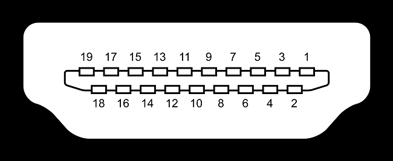
Pytanie nr 239
Liczba 10011001100 zapisana w postaci heksadecymalnej ma postać
A. 4CC
B. 2E4
C. EF4
D. 998
Pytanie nr 240
Konwerter RAMDAC przetwarza sygnał
A. analogowy na cyfrowy
B. cyfrowy na analogowy
C. zmienny na stały
D. stały na zmienny
Pytanie nr 241
W komputerach wykonujących zadania serwerowe, wymagające dużej wydajności, należy zastosować dysk z interfejsem
A. SAS
B. ATA
C. USB
D. SATA
Pytanie nr 242
Który poziom macierzy RAID zapisuje dane równolegle na kilku dyskach jako jedno urządzenie
A. RAID 0
B. RAID 1
C. RAID 2
D. RAID 3
Pytanie nr 243
Wskaż złącze, które NIE występuje w zasilaczach ATX
A. MPC
B. PCI-E
C. DE-15/HD-15
D. SATA Connector
Pytanie nr 244
Przedstawiona na rysunku karta rozszerzeń posiada chłodzenie
A. aktywne
B. pasywne
C. wymuszone
D. symetryczne
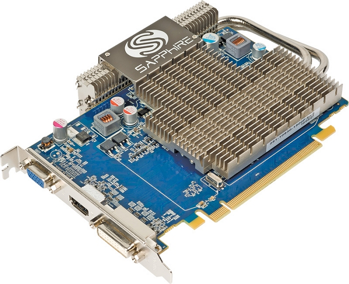
Pytanie nr 245
Głównym celem mechanizmu Plug and Play jest
A. automatycznie uruchamianie ostatnio otwartej gry
B. automatyczne tworzenie kopii danych na nowo podłączonym nośniku pamięci
C. wykrycie nowo podłączonego sprzętu i automatycznie przydzielenie mu zasobów
D. automatyczne odinstalowywanie sterowników, które przez dłuższy czas nie były używane
Pytanie nr 246
Na rysunku przedstawiono taśmę (kabel) złącza
A. SAS
B. ATA
C. SCSI
D. SATA

Pytanie nr 247
Interfejs HDMI komputera pozwala na przesyłanie sygnału
A. cyfrowego video
B. cyfrowego audio
C. cyfrowego video i audio
D. analogowego audio i video
Pytanie nr 248
W przypadku zaschnięcia dyszy w drukarce atramentowej spowodowanych długimi przestojami należy w pierwszej kolejności
A. ustawić wydruk ekonomiczny
B. wymienić mechanizm drukujący
C. oczyścić dyszę wacikiem nasączonym olejem syntetycznym
D. dokonać oczyszczenia dyszy z poziomu odpowiedniego programu
Pytanie nr 249
Interfejsem wewnętrznym komputera jest
A. IrDA
B. AGP
C. D-SUB
D. PCMCIA
Pytanie nr 250
W drukarce laserowej do utrwalania wydruku na papierze służą
A. rozgrzane wałki
B. promienie lasera
C. bęben transferowy
D. głowice piezoelektryczne
Pytanie nr 251
Aby uniknąć uszkodzenia układów scalonych, podczas naprawy sprzętu komputerowego należy stosować
A. okulary ochronne
B. gumowe rękawiczki
C. skórzane rękawiczki
D. opaskę antystatyczną
Pytanie nr 252
System S.M.A.R.T. przeznaczony jest do monitorowania pracy i wykrywania błędów
A. płyty głównej
B. kart rozszerzeń
C. dysków twardych
D. napędów płyt CD/DVD
Pytanie nr 253
Wskaż najbardziej prawdopodobną przyczynę wystąpienia komunikatu: CMOS checksum error press F1 to continue press DEL to setup przy uruchomieniu komputera
A. Usunięty plik setup
B. Uszkodzona karta graficzna
C. Skasowana zawartość pamięci CMOS
D. Rozładowana bateria podtrzymująca ustawienia BIOS-u
Pytanie nr 254
Najbardziej prawdopodobną przyczyną słabej jakości wydruku drukarki laserowej, charakteryzującego się widocznym rozmazywaniem tonera jest
A. zacięcie papieru
B. uszkodzenie rolek
C. zbyt niska temperatura utrwalacza
D. zanieczyszczenie wnętrza drukarki

Pytanie nr 255
Aby przywrócić ustawienia domyślne płyty głównej w przypadku, gdy nie ma możliwości uruchomienia programu BIOS Setup, należy
A. zaktualizować BIOS Setup
B. uruchomić ponownie system
C. przełożyć zworkę na płycie głównej
D. doładować baterię na płycie głównej
Pytanie nr 256
Podstawowe znaczenie przy budowie stacji roboczej, na której będzie działać wiele wirtualnych maszyn ma:
A. Wysokiej klasy karta sieciowa
B. Zespół chłodzenia wodą
C. Silna karta graficzna
D. Liczba rdzeni procesora
Pytanie nr 257
Złącze przedstawione na zdjęciu umożliwia podłączenie
A. Monitora
B. Drukarki
C. Modemu
D. Myszy
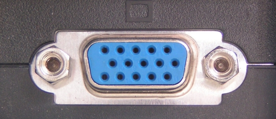
Pytanie nr 258
Które urządzenie NIE powinno być naprawiane w trakcie używania urządzeń antystatycznych?
A. Modem
B. Pamięć
C. Zasilacz
D. Dysk twardy
Pytanie nr 259
Liczba 10101110110(2) zapisana w systemie szesnastkowym ma postać
A. AE6
B. 536
C. 576
D. A76
Pytanie nr 260
Przedstawioną na rysunku kartę rozszerzeń można zainstalować w komputerze, w którym na płycie głównej jest co najmniej jeden wolny slot
A. ISA
B. PCI
C. AGP
D. PCIe

Pytanie nr 261
Przy wyborze zasilacza komputerowego największe znaczenie
A. Ma typ procesora
B. Ma współczynnik kształtu obudowy
C. Ma łączna moc wszystkich podzespołów komputerowych
D. Mają parametry zainstalowanego systemu operacyjnego
Pytanie nr 262
Najczęstszą przyczyną rozmazywania się tonera na wydrukach z drukarki laserowej jest
A. Zbyt niska temperatura utrwalacza
B. Uszkodzenie rolek
C. Zacięcie papieru
D. Zanieczyszczenie wnętrza drukarki
Pytanie nr 263
Za przydzielanie czasu procesora do określonych zadań odpowiada
A. Chipset
B. Pamięć RAM
C. Cache procesora
D. System operacyjny
Pytanie nr 264
Wskaż 24-pinowe lub 29-pinowe złącze żenskie, które może przesyłać skompresowany cyfrowy sygnał na monitor.
A. VGA
B. HDMI
C. RCA
D. DVI
Pytanie nr 265
Interfejs SATA 2 (3Gb/s) zapewnia przepustowość
A. 150 MB/s
B. 300 MB/s
C. 375 MB/s
D. 750 MB/s
Pytanie nr 266
Korzystając z zamieszczonej w tabeli specyfikacji płyty głównej, określ maksymalną liczbę kart rozszerzeń, które można podłączyć do magistrali Peripheral Component Interconnect
A. 1
B. 2
C. 3
D. 5
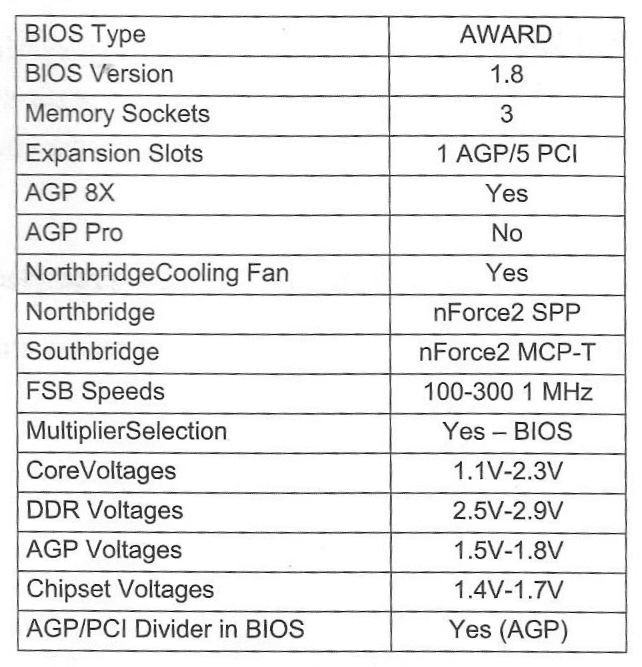
Pytanie nr 267
Ile urządzeń może być podłączonych do portu IEEE1394?
A. 1
B. 8
C. 55
D. 63
Pytanie nr 268
Umieszczany na urządzeniach symbol, będący certyfikatem zgodności urządzeń pod względem emisji promieniowania, ergonomii, energooszczędności i ekologii, przedstawiono na rysunku
A. A
B. B
C. C
D. D
Pytanie nr 269
Który z interfejsów jest portem równoległym?
A. USB
B. RS232
C. IEEE1394
D. IEEE1284
Pytanie nr 270
Na rysunku przedstawiono element, który jest częścią składową
A. HDD
B. Plotera
C. Drukarki igłowej
D. Napędu CD-ROM

Pytanie nr 271
Jakiego typu złącze należy użyć, aby podłączyć zasilanie do CD-ROM?
A. Berg
B. Molex
C. Mini-Molex
D. 20-pinowe ATX
Pytanie nr 272
Bęben światłoczuły jest niezbędnym elementem działania drukarki
A. Igłowej
B. Laserowej
C. Atramentowej
D. Sublimacyjnej
Pytanie nr 273
Zużyte urządzenie elektryczne lub elektroniczne, na którym umieszczony jest znak przedstawiony na rysunku, należy
A. Przekazać do punktu skupu złomu
B. Wyrzucić do pojemników na śmieci bytowe
C. Przekazać do punktu odbioru zużytej elektroniki
D. Wyrzucić do pojemników oznaczonych tym znakiem

Pytanie nr 274
Przedstawione na rysunku ustawienia dotyczą
A. Karty sieciowej
B. Modemu
C. Drukarki
D. Skanera
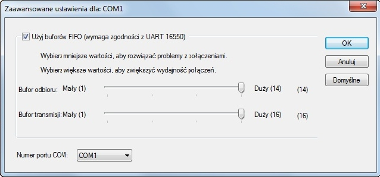
Pytanie nr 275
Na stabilność obrazu w monitorach CRT znaczący wpływ ma
A. Czas reakcji
B. Wieloczęstotliwość
C. Odwzorowanie kolorów
D. Częstotliwość odświeżania
Pytanie nr 276
Przedstawiony na rysunku znak zgodny ze standardem Energy Star oznacza urządzenie
A. Energooszczędne
B. O podwyższonym poborze mocy
C. Będące zwycięzcą plebiscytu EnergyStar
D. Wyprodukowane przez firmę EnergyStar Co

Pytanie nr 277
Co pozwala utrzymać równomierny rozkład ciepła między procesorem a radiatorem?
A. Mieszanka termiczna
B. Pasta grafitowa
C. Silikonowy spray
D. Klej
Pytanie nr 278
Nośniki danych takie jak dysk twardy przechowują informacje w porcjach zwanych sektorami, które mają rozmiar
A. 128B
B. 512B
C. 512KB
D. 1024KB
Pytanie nr 279
Liczba szesnastkowa 29A zapisana w systemie binarnym będzie miała postać:
A. 1010011010
B. 1001011010
C. 1010010110
D. 1000011010
Pytanie nr 280
Który typ pamięci należy umieścić na płycie głównej komputera w miejscu wskazanym strzałką?
A. SO-DIMM DDR2
B. SD-RAM DDR3
C. SIMM
D. FLASH
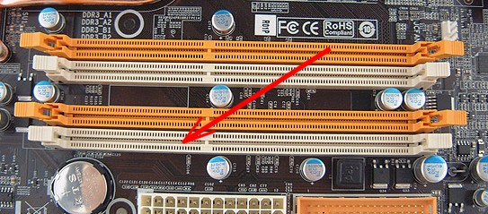
Pytanie nr 281
Zgodnie z obowiązującymi przepisami BHP odległość oczu od ekranu monitora powinna wynosić
A. 20-39 cm
B. 39-49 cm
C. 40-75 cm
D. 75-110 cm
Pytanie nr 282
Bezprzewodową transmisję danych zapewnia interfejs
A. LFH60
B. HDMI
C. IrDA
D. DVI
Pytanie nr 283
Przedstawiona na zdjęciu wtyczka jest częścią obwodu elektrycznego zasilającego
A. stację dyskietek
B. napędy CD-ROM
C. procesor ATX12V
D. dyski wewnętrzne SATA
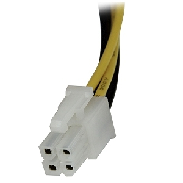
Pytanie nr 284
Koszt wydrukowania jednej strony tekstu wynosi 95 gr, natomiast koszt przygotowania jednej płyty CD to 1,54 zł. Jakie koszty poniesie firma, przygotowująca płytę z prezentacjami oraz 120 stronicowy poradnik?
A. 115,54 zł
B. 120,95 zł
C. 145,54 zł
D. 154,95 zł
Pytanie nr 285
Przedstawiony na rysunku symbol oznacza produkt
A. nadający się do powtórnego przetworzenia
B. przeznaczony do powtórnego użycia
C. biodegradowalny
D. niebezpieczny
Pytanie nr 286
Która drukarka wykorzystuje technikę polegającą na przenoszeniu stałego barwnika z taśmy na papier odporny na wysoką temperaturę?
A. Laserowa
B. Termiczna
C. Atramentowa
D. Termosublimacyjna
Pytanie nr 287
Zużyte kasety od drukarek należy
A. przekazać do wydziału ochrony środowiska
B. przekazać firmie utylizującej tego typu odpady
C. wyrzucić do pojemnika z odpadami komunalnymi
D. wyrzucić do pojemnika przeznaczonego na plastik
Pytanie nr 288
Materiałem eksploatacyjnym w drukarce laserowej jest
A. pojemnik z tuszem
B. kaseta z tonerem
C. taśma barwiąca
D. laser
Pytanie nr 289
Technika transmisji danych pomiędzy urządzeniami CD/DVD a pamięcią komputera w trybie bezpośredniego dostępu do pamięci to
A. PIO
B. IDE
C. DMA
D. SATA
Pytanie nr 290
Na rysunku zamieszczono fragment karty graficznej ze złączem
A. PCI
B. ISA
C. AGP
D. PCI-Express
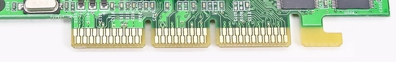
Pytanie nr 291
Jaką nazwę nosi rodzina procesorów firmy Intel, o niewielkich rozmiarach i małym poborze prądu, dedykowanych do zastosowań mobilnych?
A. Atom
B. Alpha
C. Athlon
D. Radeon
Pytanie nr 292
Zamieszczone parametry charakteryzują pamięć
A. SWAP
B. RAM
C. flash
D. SD
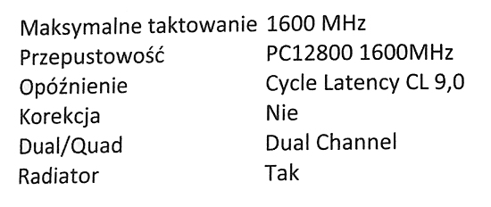
Pytanie nr 293
Na rysunku przedstawiono kabel z wtyczkami
A. ATA
B. Berg
C. Molex
D. SATA
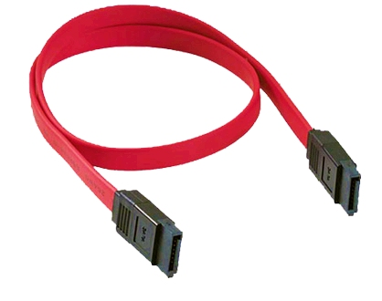
Pytanie nr 294
Złącze szeregowe na płycie głównej, służące do podłączania kart rozszerzeń o różnej, w zależności od wariantu, liczbie pinów nosi nazwę
A. ISA
B. PCI
C. AGP
D. PCI Express
Pytanie nr 295
Widoczne na schemacie procesora rejestry pełnią funkcję
A. przechowywania adresu do następnej instrukcji programu
B. sterowania wykonywanym programem
C. przechowywanie argumentów obliczeń
D. wykonywania działań arytmetycznych

Pytanie nr 296
Schemat układu połączeń bramek logicznych przedstawia
A. kontroler przerwań
B. muliplekser
C. przerzutnik
D. sumator

Pytanie nr 297
Opisana technologia stosowana w systemach rodziny Windows to
A. Plug and Play
B. File Allocation Table
C. Wywołanie systemowe
D. Hardware Abstraction Layer
Pytanie nr 298
W ramce zamieszczono opis technologii
A. SLI
B. CUDA
C. 3DVision
D. HyperTransport

Pytanie nr 299
Który z przedstawionych parametrów procesora AMD APU A10 5700 3400 nie wpływa w sposób bezpośredni na prędkość jego działania?
A. Ilość rdzeni
B. Częstotliwość
C. Pojemność pamięci
D. Proces technologiczny
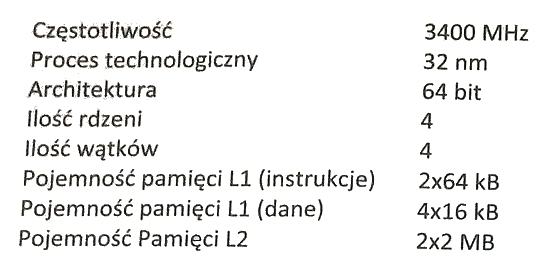
Pytanie nr 300
Liczba ABBA w kodzie heksadecymalnym ma postać dwójkową o wartości
A. 1010 1011 1011 1010
B. 1011 1010 1010 1011
C. 0101 1011 1011 0101
D. 1010 1111 1111 1010
Pytanie nr 301
Liczba dziesiętna 129 zostanie zapisana w postaci dwójkowej na
A. 5 bitach
B. 6 bitach
C. 7 bitach
D. 8 bitach
Pytanie nr 302
Aby bezprzewodowo połączyć mysz z komputerem, należy użyć interfejsu
A. DVI
B. RS 232
C. Bluetooth
D. IEEE_1284
Pytanie nr 303
Wydruk wysokiej jakości fotograficznej zapewnia drukarka
A. igłowa
B. termiczna
C. sublimacyjna
D. termotransferowa
Pytanie nr 304
Aby zapobiec wyładowaniom elektrostatycznym podczas wymiany podzespołów komputerowych, technik powinien zastosować
A. matę i opaskę antystatyczną
B. odzież poliestrową
C. rękawice gumowe
D. okulary ochronne
Pytanie nr 305
Przy wymianie którego podzespołów komputera nie wymaga się wyłączenia źródła zasilania?
A. zasilacza
B. płyty głównej
C. pamięci RAM
D. urządzenia typu hot-swap
Pytanie nr 306
W jednostce ALU do akumulatora została wpisana liczba dziesiętna 500. Jaka jest jej binarna reprezentacja?
A. 110110000
B. 111011000
C. 111110100
D. 111111101
Pytanie nr 307
Liczba 100110011 zapisana w kodzie ósemkowym ma postać
A. 463
B. 383
C. 346
D. 333
Pytanie nr 308
Jaki typ złącza musi posiadać płyta główna, aby użytkownik mógł zainstalować przedstawioną na rysunku kartę graficzną?
A. AGP
B. PCI
C. PCIe x1
D. PCIe x16

Pytanie nr 309
Wskaż właściwą kolejność operacji przygotowujących nowy laptop do pracy
A. Montaż baterii, podłączenie zewnętrznego zasilania sieciowego, włączenie laptopa, instalacja systemu operacyjnego, wyłączenie laptopa po instalacji systemu operacyjnego
B. Podłączenie zewnętrznego zasilania sieciowego, włączenia laptopa, instalacja systemu operacyjnego, montaż baterii, wyłączenie laptopa po instalacji systemu operacyjnego
C. Podłączenie zewnętrznego zasilania sieciowego, włączenie laptopa, montaż baterii, instalacja systemu operacyjnego, wyłączenie laptopa po instalacji systemu operacyjnego
D. Włączenie laptopa, montaż baterii, instalacja systemu operacyjnego, podłączenie zewnętrznego zasilania sieciowego, wyłączenie laptopa po instalacji systemu operacyjnego
Pytanie nr 310
W drukarce laserowej do utrwalenia na kartce wydruku wykorzystuje się
A. rozgrzane wałki
B. promienie lasera
C. taśmy transmisyjne
D. głowice piezoelektryczne
Pytanie nr 311
System S.M.A.R.T przeznaczony jest do monitorowania pracy i wykrywania błędów
A. płyty głównej
B. kart rozszerzeń
C. dysków twardych
D. napędów płyt CD/DVD
Pytanie nr 312
Jaki będzie koszt wymiany karty graficznej w komputerze, jeśli karta kosztuje 250 zł, jej wymiana zajmie pracownikowi serwisu 80 minut, a każda rozpoczęta roboczogodzina kosztuje 50 zł?
A. 250 zł
B. 300 zł
C. 350 zł
D. 400 zł
Pytanie nr 313
Zasilanie dostarczane przez płytę główną dla pamięci typu SDRAM DDR3 może mieć wartość
A. 1,2 V
B. 3,3 V
C. 1,5 V
D. 2,5 V
Pytanie nr 314
Przedstawiony rysunek prezentuje złącze
A. D-SUB
B. DVI-D
C. DVI-A
D. HDMI

Pytanie nr 315
Maksymalny transfer danych napędu CD dla prędkości przesyłu x42 wynosi
A. 6300 KiB/s
B. 3600 KiB/s
C. 6000 KiB/s
D. 2400 KiB/s
Pytanie nr 316
Taśma barwiąca jest podstawowym materiałem eksploatacyjnym drukarki
A. atramentowej
B. termicznej
C. laserowej
D. igłowej
Pytanie nr 317
Typem pamięci operacyjnej o możliwie najmniejszym poborze mocy jest
A. DDR
B. SDR
C. DDR3
D. DDR2
Pytanie nr 318
Adapter USB na LPT można wykorzystać przy niekompatybilności złączy w przypadku podłączenia starszych egzemplarzy
A. drukarki
B. myszy
C. klawiatury
D. monitora
Pytanie nr 319
Widoczne na schemacie procesora rejestry pełnią funkcję przechowywania adresu do
A. następnej instrukcji programu
B. sterowania wykonywanym programem
C. przechowywania argumentów obliczeń
D. wykonywania działań arytmetycznych
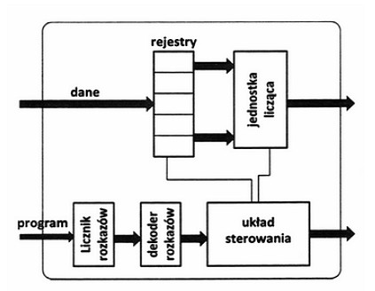
Pytanie nr 320
W nowoczesnych ekranach dotykowych poprawność działania ekranu zapewnia mechanizm wykrywający zmianę
A. oporu między przezroczystymi diodami wtopionymi w ekran
B. położenia ręki dotykającej ekran poprzez zastosowanie kamery
C. pola elektrostatycznego
D. pola elektromagnetycznego
Pytanie nr 321
Przedstawiony schemat obrazuje zasadę działania skanera
A. bębnowego
B. ręcznego
C. płaskiego
D. 3D

Pytanie nr 322
Do oznaczenia iloczynu logicznego jest stosowany spójnik
A. OR
B. NOT
C. XOR
D. AND
Pytanie nr 323
Do interfejsów równoległych zaliczany jest interfejs
A. FireWire
B. DVI
C. RS-232
D. AGP
Pytanie nr 324
Funkcję S.M.A.R.T. dysku twardego odpowiadającą za aktywność mechanizmu monitoringu i wczesnego ostrzegania przed usterkami można aktywować poprzez
A. opcję polecenia chkdsk
B. rejestr systemu
C. panel sterowania
D. BIOS płyty głównej
Pytanie nr 325
Emisja sygnałów dźwiękowych: jednego długiego i dwóch krótkich przez BIOS firmy AMI oznacza
A. uszkodzenie pamięci
B. błąd parzystości pamięci
C. błąd karty graficznej
D. uszkodzenie zegara systemowego
Pytanie nr 326
Urządzenia korzystające z portu USB 2.0 są zasilane napięciem, którego wartość mieści się w zakresie
A. 5,35 V - 5,95 V
B. 4,75 V - 5,35 V
C. 3,55 V - 4,15 V
D. 4,15 V - 4,75 V
Pytanie nr 327
Jeden terabajt jest równy
A. 10^12 bajtów
B. 10^10 bajtów
C. 10^8 bajtów
D. 10^14 bajtów
Pytanie nr 328
Napięcie dostarczane do poszczególnych elementów komputera w zasilaczu komputerowym w standardzie ATX jest zmniejszane z wartości 230 V między innymi do wartości
A. 130 V
B. 12 V
C. 4 V
D. 20 V
Pytanie nr 329
Urządzenie typu Plug and Play, podłączone do komputera po raz kolejny, jest rozpoznawane na podstawie
A. lokalizacji sterownika urządzenia
B. specjalnego sterownika programowego
C. unikalnego identyfikatora urządzenia
D. lokalizacji urządzenia
Pytanie nr 330
Do montażu zestawu komputerowego z płytą główną zawierającą gniazdo procesora typu Socket AM3 można zastosować procesor
A. Core i7
B. Itanium
C. Pentium D
D. Phenom II
Pytanie nr 331
Martwy piksel, będący wadą monitorów LCD, to punkt pozostający niezmiennie w kolorze
A. czarnym
B. żółtym
C. szarym
D. fioletowym
Pytanie nr 332
Na płycie głównej uległa uszkodzeniu zintegrowana karta sieciowa. Komputer nie może uruchomić systemu operacyjnego, gdyż nie ma dysku twardego ani żadnych napędów optycznych, a system operacyjny uruchamiany jest z sieci lokalnej. Aby przywrócić utraconą funkcjonalność, należy zamontować w komputerze
A. najprostszą kartę sieciową wspierającą IEEE 802.3
B. dysk twardy
C. napęd CD-ROM
D. kartę sieciową wspierającą funkcję Preboot Execution Environment
Pytanie nr 333
Jaki będzie koszt wymiany karty sieciowej w komputerze, jeśli karta kosztuje 40 zł, jej wymiana zajmie pracownikowi serwisu 90 minut, a każda rozpoczęta roboczogodzina kosztuje 60 zł?
A. 160 zł
B. 200 zł
C. 130 zł
D. 40 zł
Pytanie nr 334
W systemie binarnym wynikiem sumowania liczb dwójkowych 1001101 i 11001 jest
A. 1101100
B. 1100110
C. 1110001
D. 1101101
Pytanie nr 335
Certyfikatem potwierdzającym energooszczędność urządzenia jest
A. Energy TCO
B. Energy STAR
C. Energy IEEE
D. Energy ISO
Pytanie nr 336
Liczba dziesiętna 512 w systemie binarnym ma postać
A. 100000
B. 1000000
C. 10000000
D. 1000000000
Pytanie nr 337
Aby zapisać 10 GB danych na jednej płycie DVD, należy użyć nośnika typu
A. DVD-5
B. DVD-9
C. DVD-10
D. DVD-18
Pytanie nr 338
Na schemacie mikroprocesora wskazany strzałką blok jest odpowiedzialny za
A. przechowywanie obecnie przetwarzanej instrukcji
B. przechowywanie kolejnych adresów pamięci z rozkazami
C. wykonywanie operacji arytmetycznych i logicznych na liczbach
D. przetwarzanie wskaźnika na następną instrukcję programu

Pytanie nr 339
Do prawidłowego działania procesora jest niezbędne podłączenie 4-stykowego lub 8-stykowego złącza zasilania o napięciu
A. 7 V
B. 12 V
C. 24 V
D. 3,3 V
Pytanie nr 340
Aby zapisać dane na płycie pokazanej na rysunku, jest potrzebny napęd
A. DVD-R/RW
B. CD-R/RW
C. HD-DVD
D. Blu-ray

Pytanie nr 341
Transmisję danych z maksymalną przepustowością 6Gb/s umożliwia interfejs
A. USB 2.0
B. USB 3.0
C. SATA 2
D. SATA 3
Pytanie nr 342
Komputer wyposażono w płytę główną przedstawioną na rysunku. Aby zwiększyć moc obliczeniową komputera zaleca się
A. zainstalowanie dwóch procesorów
B. zwiększyć pamięci operacyjne
C. instalację kontrolera RAID
D. instalację dysku SAS
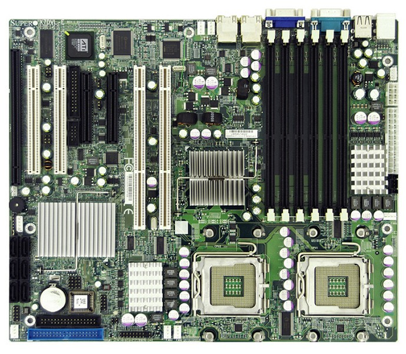
Pytanie nr 343
Transfer danych napędu DVD dla prędkości przesyłu x48 wynosi
A. 10800 KiB/s
B. 32400 KiB/s
C. 54000 KiB/s
D. 64800 KiB/s
Pytanie nr 344
Do podłączenia dysku wyposażonego w interfejs SAS należy zastosować kabel pokazany na rysunku
A. A
B. B
C. C
D. D

Pytanie nr 345
Jaka jest liczba pinów we wtyczce SATA?
A. 4
B. 5
C. 7
D. 9
Pytanie nr 346
Transmisja za pomocą fal radiowych korzystających z pasma ISM jest realizowana w interfejsie
A. Bluetooth
B. FireWire
C. HDMI
D. IrDA
Pytanie nr 347
Bęben światłoczuły jest stosowany w drukarkach
A. igłowych
B. laserowych
C. atramentowych
D. termosublimacyjnych
Pytanie nr 348
Wydruk z drukarki igłowej odbywa się przy użyciu zestawu stalowych igieł w ilości
A. 6, 9 lub 15
B. 10, 20 lub 30
C. 9, 24 lub 48
D. 9, 15 lub 45
Pytanie nr 349
Zapis na dyskach BD-R odbywa się za pomocą
A. światła UV
B. lasera czerwonego
C. lasera niebieskiego
D. głowicy magnetycznej
Pytanie nr 350
Na rysunku przedstawiono schemat zasady działania
A. karty dźwiękowej
B. kontrolera USB
C. karty graficznej
D. modemu

Pytanie nr 351
Aby udrożnić zatkane dysze kartridża drukarki atramentowej, należy
A. przemyć dyszę specjalnym środkiem chemicznym
B. oczyścić dysze za pomocą sprężonego powietrza
C. przeczyścić dysze drobnym papierem ściernym
D. oczyścić dysze za pomocą drucianych zmywaków
Pytanie nr 352
Do serwisu komputerowego dostarczono laptopa z matrycą bardzo słabo wyświetlającą obraz. Ponadto obraz jest bardzo ciemny i widoczny tylko z bliska. Przyczyna usterki to
A. pęknięta matryca
B. uszkodzony inwerter
C. uszkodzone gniazdo HDMI
D. uszkodzone łącze między procesorem a matrycą
Pytanie nr 353
Przyczyną problemu z wydrukiem z drukarki laserowej pokazanym na rysunku jest
A. zaschnięty tusz
B. uszkodzony podajnik papieru
C. uszkodzony bęben światłoczuły
D. brak tonera w kasecie kartridż
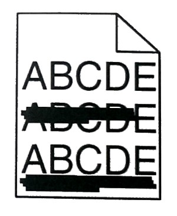
Pytanie nr 354
Podczas podłączenia sprawnego monitora do innego komputera jest wyświetlany komunikat przedstawiony na rysunku. Pojawienie się komunikatu jest spowodowane
A. wyłączeniem komputera
B. uszkodzeniem karty graficznej komputera
C. uszkodzeniem monitora podczas podłączenia
D. zbyt wysoką lub zbyt niską częstotliwością sygnału
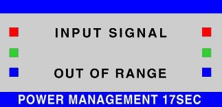
Pytanie nr 355
Aby możliwe było wykorzystanie macierzy RAID 1, potrzeba minimum
A. 2 dysków
B. 3 dysków
C. 4 dysków
D. 5 dysków
Pytanie nr 356
Wynikiem dodawania liczb 33(8) oraz 71(8) jest liczba
A. 1010101(2)
B. 1100101(2)
C. 1001100(2)
D. 1010100(2)
Pytanie nr 357
Niepoprawna postać zapisu liczby 77(8) to
A. 3F(16)
B. 63(10)
C. 111111(2)
D. 11010(ZM)
Pytanie nr 358
We wtyczce zasilania SATA został uszkodzony żółty przewód. Oznacza to, że złącze nie podaje napięcia o wartości
A. 5V
B. 12V
C. 3,3V
D. 8,5V
Pytanie nr 359
Z danych zestawionych w tabeli wynika, że częstotliwość efektywna pamięci DDR SDRAM wynosi
A. 200 MHz
B. 266 MHz
C. 333 MHz
D. 400 MHz

Pytanie nr 360
Jak nazywa się technologia umożliwiająca łączenie kart graficznych opracowana przez firmę NVIDIA?
A. SLI
B. ATI
C. RAMDAC
D. CROSSFIRE
Pytanie nr 361
Który port na przedstawionej płycie umożliwia podłączenie zewnętrznego dysku poprzez interfejs e-SATA?
A. 1
B. 2
C. 3
D. 4
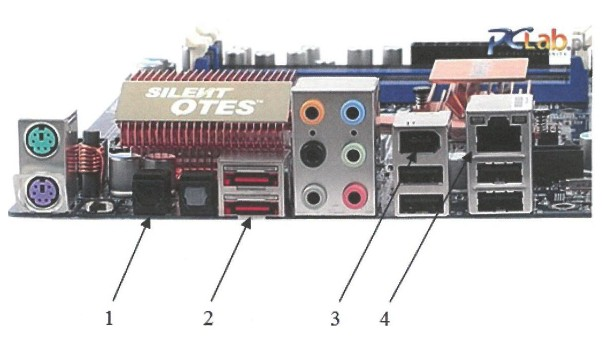
Pytanie nr 362
Elementem zestawu komputerowego przetwarzającym zarówno dane wejściowe, jak i wyjściowe jest
A. ploter
B. skaner
C. modem
D. głośnik
Pytanie nr 363
Odpowiednikiem macierzy RAID 1 w systemie Windows jest wolumin
A. dublowany
B. rozłożony
C. łączony
D. prosty
Pytanie nr 364
W dokumentacji karty dźwiękowej znajduje się następująca informacja: częstotliwość próbkowania 22kHz, rozdzielczość próbkowania 16 bitów. Jaka będzie przybliżona wielkość pliku dźwiękowego z 10-sekundowym nagraniem mono (jednokanałowym)?
A. 80000 B
B. 160000 B
C. 220000 B
D. 440000 B
Pytanie nr 365
Odzyskiwanie surowców z odpadów w celu ich ponownego wykorzystania to
A. kataliza
B. recykling
C. utylizacja
D. segregacja
Pytanie nr 366
Jaki rodzaj transmisji danych przesyłanych przez interfejs komputera osobistego został przedstawiony na rysunku?
A. Szeregowy synchroniczny
B. Równoległy synchroniczny
C. Szeregowy asynchroniczny
D. Równoległy asynchroniczny
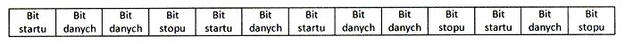
Pytanie nr 367
Elementem służącym do utrwalania tonera na papierze podczas wydruku z drukarki laserowej jest
A. wałek grzewczy
B. bęben światłoczuły
C. elektroda ładująca
D. listwa czyszcząca
Pytanie nr 368
Urządzeniem wskazującym, które reaguje na zmiany pojemności elektrycznej, jest
A. mysz
B. dżojstik
C. touchpad
D. trackpoint
Pytanie nr 369
Wymiana taśmy barwiącej związana jest z użytkowaniem drukarki
A. igłowej
B. laserowej
C. atramentowej
D. termicznej
Pytanie nr 370
W systemie operacyjnym wystąpił błąd sterownika TWAIN. Może być on powodem niepoprawnej pracy
A. plotera
B. skanera
C. drukarki
D. klawiatury
Pytanie nr 371
Do sprawdzenia wartości napięcia w zasilaczu służy
A. amperomierz
B. impulsator
C. multimetr
D. pirometr
Pytanie nr 372
Przy uruchamianiu komputera pojawia sie komunikat CMOS checksum error press F1 to continue press DEL to setup. Wciśnięcie klawisza DEL spowoduje
A. usunięcie pliku setup
B. skasowanie zawartości pamięci CMOS
C. wejście do BIOS-u komputera
D. przejście do konfiguracji systemu Windows
Pytanie nr 373
Na rysunku przedstawiono
A. impulsator
B. sondę logiczną
C. czujnik temperatury
D. tester płyt głównych

Pytanie nr 374
Która z liczb w zapisie dziesiętnym jest prawidłową reprezentacją liczby 10111111 (2)?
A. 191 (10)
B. 193 (10)
C. 381 (10)
D. 382 (10)
Pytanie nr 375
Prawidłowym wynikiem mnożenia dwóch liczb binarnych 11100110 i 00011110 jest liczba
A. 6900 (10)
B. 6900 (h)
C. 64400 (o)
D. 0110 1001 0000 0000 (2)
Pytanie nr 376
Parametr pamięci RAM nazywany czasem opóźnienia jest definiowany jako
A. RAS to CAS Delay
B. Command Rate
C. RAS Precharge
D. CAS Latency
Pytanie nr 377
Zgodnie ze specyfikacją JEDEC napięcie zasilania modułów pamięci RAM DDR3L wynosi
A. 1,35 V
B. 1,5 V
C. 1,85 V
D. 1,9 V
Pytanie nr 378
Które z wymienionych urządzeń jest elementem jednostki centralnej?
A. Klawiatura PS/2
B. Monitor LCD
C. Modem PCI
D. Mysz USB
Pytanie nr 379
Spośród wymienionych płyt głównych najmniejsze rozmiary ma format
A. Micro BTX
B. Mini ATX
C. Flex ATX
D. Mini ITX
Pytanie nr 380
Przedstawiony na rysunku element systemu komputerowego to:
A. karta graficzna do notebooka
B. moduł pamięci Cache
C. dysk SSD
D. GPU

Pytanie nr 381
Procesory AMD wyposażone w złącze AM2+ będą poprawnie działały na płycie głównej wyposażonej w podstawkę socket
A. FM2
B. AM2
C. AM3
D. AM3+
Pytanie nr 382
Złącze zasilacza ATX12V służy do zasilania
A. karty graficznej PCI-e 3.0
B. urządzeń SATA
C. stacji dyskietek
D. procesora
Pytanie nr 383
Pamięć podręczna Intel Smart Cache wbudowana w procesory wielordzeniowe np. Intel Core Duo to pamięć
A. Cache L1 podzielona równo pomiędzy rdzenie
B. Cache L1 współdzielona przez wszystkie rdzenie
C. Cache L2 lub Cache L3, podzielona równo pomiędzy rdzenie
D. Cache L2 lub Cache L3, współdzielona przez wszystkie rdzenie
Pytanie nr 384
Serwerowa płyta główna do poprawnego działania wymaga pamięci z rejestrem. Który z wymienionych modułów pamięci będzie kompatybilny z taką płytą
A. Kingston 4GB 1333 MHz DDR3 Non-ECC CL9 DIMM
B. Kingston 4GB 1600 MHz DDR3 ECC CL11 DIMM 1,5V
C. Kingston 8GB 1333 MHz DDR3 ECC Reg CL9 DIMM 2Rx8
D. Kingston Hynix B 8GB 1600 MHz DDR3L CL11 ECC SODIMM 1,35V
Pytanie nr 385
Wymieniając uszkodzoną kartę graficzną, która współpracowała z monitorem wyposażonym tylko w wejście analogowe, należy wybrać kartę
A. Gigabyte GeForce GT 740 OC, 1GB GDDR5 (128 Bit), HDMI, DVI, D-Sub
B. Sapphire Radeon R7 250X FLEX, 1GB GDDR5 (128 Bit), HDMI, 2xDVI, DP, LITE
C. ZOTAC GeForce GT 730 Synergy Edition, 4GB DDR3 (128 Bit), 2xDVI, miniHDMI
D. Sapphire Radeon R7 250, 1GB GDDR5 (128 Bit), microHDMI, DVI, miniDP LP, BULK
Pytanie nr 386
Które elementy systemu komputerowego podlegają utylizacji w wyspecjalizowanych zakładach przetwarzania z uwagi na zawartość niebezpiecznych substancji lub pierwiastków chemicznych?
A. Obudowy komputerów
B. Przewody
C. Radiatory
D. Tonery
Pytanie nr 387
Które medium transmisyjne wykorzystują myszki bluetooth do komunikacji z komputerem?
A. Promieniowanie podczerwone
B. Promieniowanie ultrafioletowe
C. Fale radiowe w paśmie 2,4 GHz
D. Fale radiowe w paśmie 800/900 MHz
Pytanie nr 388
Diody elektroluminescencyjne RGB są źródłem światła w skanerach
A. bębnowych
B. płaskich CIS
C. płaskich CCD
D. kodów kreskowych
Pytanie nr 389
Użytkownik, który chce drukować dokumenty jednocześnie w oryginale i trzech kopiach na papierze samokopiującym, powinien do tego celu zakupić drukarkę
A. termotransferową
B. atramentową
C. laserową
D. igłową
Pytanie nr 390
W której technologii budowy projektorów wykorzystywany jest system mikroskopijnych luster, z których każde odpowiada 1 pikselowi wyświetlanego obrazu?
A. LCD
B. DLP
C. LED
D. LCOS
Pytanie nr 391
Do zasilacza UPS o mocy rzeczywistej 480 W nie należy podłączać
A. urządzeń sieciowych typu router
B. drukarki laserowej
C. modemu ADSL
D. monitora
Pytanie nr 392
Tusz żelowy jest stosowany w drukarkach
A. termotransferowych
B. sublimacyjnych
C. fiskalnych
D. igłowych
Pytanie nr 393
Chusteczki nasączone płynem o właściwościach antystatycznych są przeznaczone do czyszczenia
A. ekranów monitorów CRT
B. ekranów monitorów LCD
C. wałków olejowych w drukarkach laserowych
D. rolek prowadzących papier w drukarkach atramentowych
Pytanie nr 394
Do pomiaru wartości mocy pobieranej przez komputer należy użyć
A. watomierza
B. woltomierza
C. amperomierza
D. testera zasilaczy
Pytanie nr 395
Poprawność działania pamięci operacyjnej RAM można sprawdzić za pomocą programu diagnostycznego
A. CPU-Z
B. GPU-Z
C. S.M.A.R.T
D. Memtest86+
Pytanie nr 396
Komunikat "BIOS checksum error" wyświetlany podczas uruchomienia komputera oznacza najczęściej
A. Błąd pamięci operacyjnej
B. Uszkodzony wentylator procesora
C. Brak nośnika z systemem operacyjnym
D. Uszkodzoną lub rozładowaną baterię na płycie głównej
Pytanie nr 397
Przy próbie zapisu danych na karcie SD pojawia się komunikat „usuń ochronę przed zapisem lub użyj innego dysku”. Przyczyną takiego komunikatu jest najczęściej
A. Ustawienie mechanicznego przełącznika blokady zapisu na karcie w pozycji ON
B. Posiadanie uprawnień 'tylko odczyt' do plików na karcie SD
C. Za duży rozmiar zapisywanego pliku
D. Brak miejsca na karcie pamięci
Pytanie nr 398
Dane z dysku twardego HDD z uszkodzonym sterownikiem silnika SM można odzyskać
A. Przez wymianę silnika SM
B. Za pomocą polecenia fixmbr
C. Za pomocą zewnętrznego programu do odzyskiwania danych np. TestDisk
D. Przez wymianę płytki z elektroniką dysku na inną pochodzącą z takiego samego modelu
Pytanie nr 399
Użytkownicy dysków SSD w ramach zalecanych czynności konserwacyjnych nie powinni wykonywać
A. Defragmentacji dysku
B. Systematycznych kopii zapasowych danych
C. Czyszczenia wnętrza jednostki centralnej z kurzu
D. Systematycznego sprawdzania dysku programem antywirusowym
Pytanie nr 400
W cenniku usług komputerowych znajdują się przedstawione niżej zapisy. Ile będzie wynosił koszt dojazdu serwisanta do klienta mieszkającego poza miastem, w odległości 15km od siedziby firmy?
A. 30 zł
B. 30 zł + VAT
C. 25 zł + 2 zł za każdy km poza granicami miasta
D. 60 zł + VAT
Pytanie nr 401
Liczba 563 (8) zapisana w systemie szesnastkowym to
A. 173
B. 317
C. 371
D. 713
Pytanie nr 402
Wynikiem sumowania liczb binarnych 1001101 i 11001 jest
A. 1000110
B. 1100111
C. 1000111
D. 1100110
Pytanie nr 403
Komponentem płyty głównej odpowiedzialnym za komunikację pomiędzy procesorem a pozostałymi elementami płyty jest
A. chipset
B. BIOS ROM
C. pamięć RAM
D. układ chłodzenia
Pytanie nr 404
Odmianą pamięci tylko do odczytu, którą można wykasować za pomocą światła ultrafioletowego, jest pamięcią
A. ROM
B. PROM
C. EPROM
D. EEPROM
Pytanie nr 405
Magistrala zakończona elementem przedstawionym na rysunku jest charakterystyczna dla interfejsu
A. SCSI
B. SATA
C. ATAPI
D. UDMA

Pytanie nr 406
Na rysunku złącze monitora oznaczone ramką czerwoną, będzie współpracowało z płytą główną wyposażoną w interfejs
A. DVI
B. HDMI
C. D-SUB
D. DisplayPort

Pytanie nr 407
Pamięć RAM przedstawiona na rysunku, montowana jest na płycie głównej wyposażonej w gniazdo
A. DDR
B. DDR2
C. DDR3
D. DDR4

Pytanie nr 408
Rysunek przedstawia schemat
A. karty graficznej
B. przetwornika DAC
C. zasilacza impulsowego
D. przełącznika kopułkowego

Pytanie nr 409
Wskaż rysunek przedstawiający symbol stosowany do oznaczenia portu równoległego LPT
A. A
B. B
C. C
D. D
Pytanie nr 410
Oprogramowanie regularnie przerywające działanie poprzez wyświetlenie komunikatu żądania uiszczenia zapłaty, która spowoduje usunięcie tego komunikatu, jest rozpowszechniane na bazie licencji
A. nagware
B. careware
C. greenware
D. crippleware
Pytanie nr 411
Program Mozilla Firefox jest rozpowszechniany na podstawie licencji
A. OEM
B. MOLP
C. Liteware
D. GNU MPL
Pytanie nr 412
Interfejs używany do komunikacji między urządzeniami przenośnymi, wykorzystujący cyfrową transmisję optyczną bezprzewodową do przesyłania danych na stosunkowo krótkim odcinku, to
A. IEEE 1394a
B. IEEE 1394c
C. Bluetooth
D. IrDA
Pytanie nr 413
Interfejs równoległy, którego magistrala składa się z 8 linii danych, 4 linii sterujących, 5 linii statusu, nie zawiera linii zasilających oraz który zapewnia transmisję na odległość do 5 metrów, jeśli przewody sygnałowe są skręcane z przewodami masy, w przeciwnym wypadku na odległość do 2 metrów, nosi nazwę
A. USB
B. LPT
C. EISA
D. AGP
Pytanie nr 414
Urządzenie peryferyjne sterowane za pomocą komputera, stosowane do pracy z płaskimi powierzchniami wielkoformatowymi, które do tworzenia wydruku odpornego na czynniki zewnętrzne wykorzystuje farby na bazie rozpuszczalników, to ploter
A. solwentowy
B. piaskowy
C. kreślący
D. tnący
Pytanie nr 415
Urządzenie peryferyjne przedstawione na rysunku to skaner biometryczny, wykorzystujący do autoryzacji
A. rysy twarzy
B. kształt dłoni
C. linie papilarne
D. brzmienie głosu
Pytanie nr 416
Drukarkę zainstalowano w systemie z rodziny Windows. Aby ustawić między innymi domyślną orientację wydruku, liczbę stron na arkusz oraz dostosowanie kolorów, podczas jej konfiguracji należy wykorzystać opcję
A. prawa drukowania
B. udostępniania drukarki
C. preferencji drukowania
D. zabezpieczenia drukarki
Pytanie nr 417
Mechanizm umożliwiający podłączenie urządzeń peryferyjnych współpracujących z systemem komputerowym, w którym podłączane urządzenie jest rozpoznawane za pomocą nadanego mu numeru identyfikacyjnego, to
A. CrossFire
B. Hot Swap
C. BootLoader
D. Plug and Play
Pytanie nr 418
Materiał eksploatacyjny drukarki 3D to
A. fluid
B. filament
C. katalizator
D. pył węglowy
Pytanie nr 419
Wskaż rysunek przedstawiający materiał eksploatacyjny typowy dla drukarek żelowych
A. A
B. B
C. C
D. D
Pytanie nr 420
Przy dłuższych przestojach drukarki atramentowej używane w niej pojemniki z tuszem powinny
A. zostać wymontowane z drukarki i umieszczone w szafie, bez dodatkowych zabezpieczeń
B. zostać zabezpieczone w specjalnych pudełkach uniemożliwiających zasychanie dysz
C. pozostać w drukarce, bez wykonywania dodatkowych czynności
D. pozostać w drukarce, którą należy zabezpieczyć folią
Pytanie nr 421
Czynnością konserwacyjną związaną z eksploatacją skanera płaskiego jest
A. włączenie automatycznego pobierania zalecanych sterowników do urządzenia
B. regularne czyszczenie szyby skanera oraz płyty dociskowej
C. podłączenie urządzenia do listwy przepięciowej
D. czyszczenie dysz kartridża
Pytanie nr 422
Urządzenie przedstawione na rysunku służy do
A. odczytywania kodów POST z płyty głównej
B. sprawdzania długości przewodów sieciowych
C. organizacji przewodów wewnątrz jednostki centralnej
D. zmierzenia wartości napięcia dostarczanego przez zasilacz komputerowy

Pytanie nr 423
Jeśli podczas uruchamiania się systemu BIOS firmy AWARD komputer wydał długi sygnał i dwa krótkie, oznacza to, że wystąpił błąd
A. płyty głównej
B. karty graficznej
C. pamięci Flash - BIOS
D. kontrolera klawiatury
Pytanie nr 424
Dostarczanie nieprawidłowych napięć do płyty głównej może prowadzić do
A. puchnięcia kondensatorów, zawieszania się jednostki centralnej oraz niespodziewanych restartów
B. uruchomienia się jednostki centralnej z kolorowymi pasami i kreskami na ekranie
C. braku możliwości instalacji oprogramowania
D. wystąpienia błędów pamięci RAM
Pytanie nr 425
Proces, w wyniku którego pliki zgromadzone na dysku twardym są zapisywane na niesąsiadujących ze sobą klastrach, jest nazywany
A. defragmentacją danych
B. kodowaniem danych
C. konsolidacją danych
D. fragmentacją danych
Pytanie nr 426
Podczas pracy z drukarką laserową blade wydruki lub nierównomierne nanoszenie medium drukującego mogą świadczyć o
A. uszkodzeniu przewodu łączącego drukarkę z komputerem
B. błędnie zainstalowanych sterownikach drukarki
C. zgięciu kartki papieru wewnątrz urządzenia.
D. wyczerpywaniu się tonera
Pytanie nr 427
Przedstawiona na rysunku usterka, widoczna na ekranie komputera, nie może być spowodowana przez
A. przegrzewanie się karty graficznej
B. złe napięcia podawane przez zasilacz
C. uszkodzenie modułów pamięci operacyjnej
D. spalenie rdzenia lub pamięci karty graficznej po overclockingu

Pytanie nr 428
Programem, który dostarcza najwięcej informacji diagnostycznych o procesorze CPU, jest
A. GPU-Z
B. HD Tune
C. HWiNFO
D. Memtest86+
Pytanie nr 429
Aby zapewnić właściwie funkcjonowanie skanera, należy
A. nie wkładać kartek ze zszywkami do podajnika urządzenia, jeśli jest on automatyczny
B. smarować łożyska wentylatorów chłodzenia jednostki centralnej
C. mieć zainstalowany w systemie program antywirusowy
D. sprawdzić temperaturę podzespołów komputera
Pytanie nr 430
Zapis koloru RGB(255, 170, 129) odpowiada notacji
A. #FFAA81
B. #81AAFF
C. #18FAAF
D. #AA18FF
Pytanie nr 431
Zapis liczby siedem w systemie ósemkowym to
A. 7(b)
B. 7(o)
C. 7(d)
D. 7(h)
Pytanie nr 432
Brak informacji o parzystości liczby lub o znaku wyniku wykonywanej operacji w ALU, może świadczyć o problemach w działaniu
A. pamięci cache
B. wskaźnika stosu
C. tablicy rozkazów
D. rejestru flagowego
Pytanie nr 433
Funkcję bufora pomiędzy wolną pamięcią operacyjną a szybkim procesorem pełni pamięć
A. SSD
B. FDD
C. ROM
D. CACHE
Pytanie nr 434
Procesory CISC charakteryzują się
A. dużą liczbą rozkazów
B. prostą i szybką jednostką sterującą
C. niewielką liczbą trybów adresowania
D. ograniczaną komunikacją pomiędzy pamięcią a procesorem
Pytanie nr 435
Do przedstawionej na rysunku płyty głównej nie można podłączyć urządzenia wykorzystującego złącze
A. IDE
B. PCI
C. AGP
D. SATA

Pytanie nr 436
Aby poprawić wydajność komputera, można w nim zamontować procesor obsługujący technologię Hyper-Threading, umożliwiającą
A. zwiększenie szybkości pracy zegara
B. wykonywanie przez jeden rdzeń procesora dwóch niezależnych zadań jednocześnie
C. automatyczną regulację częstotliwości rdzeni procesora w zależności od jego obciążenia
D. wymianę danych pomiędzy procesorem a dyskiem twardym z prędkością pracy procesora
Pytanie nr 437
Jaką rozdzielczość musi obsługiwać karta graficzna, aby oglądać na 23-calowym monitorze materiał video w trybie Full HD?
A. 2560×1440
B. 2048×1152
C. 1920×1080
D. 1600×900
Pytanie nr 438
Użytkownik laptopa chce do niego podłączyć przedstawioną na rysunku kartę sieciową. Aby to było możliwe, laptop musi być wyposażony w gniazdo
A. BNC
B. Slot 3
C. Mini DIN
D. PCMCIA
Pytanie nr 439
Który procesor należy wykorzystać podczas montażu komputera osobistego na bazie płyty głównej Asus M5A78L-M/USB3 AMD760G socket AM3+
A. AMD A8-7600 S.FM2 BOX
B. AMD APU A4 6320 3800MHz FM2
C. AMD FX 8300 3300MHz AM3+ OEM
D. AMD APU A8 7650K 3300MHz FM2+ BOX
Pytanie nr 440
Aby możliwe było przesyłanie cyfrowego sygnału audio i wideo bez strat jakości z komputera do urządzenia zewnętrznego podłączonego do wyjścia karty graficznej, to karta graficzna powinna być wyposażona w interfejs
A. VGA
B. DVI-A
C. D-Sub
D. HDMI
Pytanie nr 441
Aby uzyskać przepustowość na poziomie 4 GB/s w każdą stronę, należy zamontować w zestawie komputerowym kartę graficzną wykorzystującą interfejs
A. PCI-Express x 1 wersja 3.0
B. PCI-Express x 4 wersja 2.0
C. PCI-Express x 8 wersja 1.0
D. PCI-Express x 16 wersja 1.0
Pytanie nr 442
W który rodzaj matrycy powinien być wyposażony monitor w modernizowanym zestawie komputerowym w przypadku konieczności zapewnienia wysokiej jakości obrazu oraz szerokich kątów widzenia w poziomie i pionie?
A. TN
B. IPS
C. CRT
D. DLP
Pytanie nr 443
W dokumentacji technicznej procesora producent umieścił wyniki testu przeprowadzonego za pomocą programu CPU-Z. Wynika z niego, że procesor ma
A. 2 rdzenie
B. 4 rdzenie
C. 5 rdzeni
D. 6 rdzeni
Pytanie nr 444
Transmisja interfejsem równoległym synchronicznym cechuje się tym, że
A. w wyznaczonych okresach czasu określanych sygnałem zegarowym CLK dane przesyłane są jednocześnie kilkoma przewodami
B. dane są przesyłane jednocześnie całą szerokością magistrali, a początek i koniec transmisji jest oznaczony bitem startu i stopu
C. dane są przesyłane bit po bicie w wyznaczonych okresach czasu określanych sygnałem zegarowym CLK
D. początek i koniec przesyłanych bit po bicie danych jest oznaczony bitem startu i stopu
Pytanie nr 445
Który interfejs umożliwia korzystanie ze sterowników i oprogramowania systemu operacyjnego, zapewniając m.in. przepływ danych między pamięcią systemową a dyskiem SATA?
A. EHCI
B. OHCI
C. AHCI
D. UHCI
Pytanie nr 446
W skanerze z układami CIS elementem oświetlającym skanowany dokument jest
A. świetlówka
B. układ żarówek
C. lampa fluorescencyjna
D. grupa trójkolorowych diod LED
Pytanie nr 447
Aby zapobiec występowaniu różnic w kolorach między zeskanowanymi zdjęciami wyświetlanymi na monitorze komputerowym a ich oryginałami, należy wykonać
A. modelowanie skanera
B. interpolację skanera
C. kadrowanie skanera
D. kalibrację skanera
Pytanie nr 448
Który przyrząd pomiarowy służy do sprawdzenia wartości napięć w zasilaczu?
A. Omomierz
B. Watomierz
C. Woltomierz
D. Amperomierz
Pytanie nr 449
Impulsator umożliwia testowanie uszkodzonych układów logicznych komputera między innymi przez
A. odczytanie stanu wyjściowego układu
B. podanie na wejście układu stanu wysokiego
C. kalibrację mierzonych wielkości elektrycznych
D. badanie stanów logicznych obwodów cyfrowych
Pytanie nr 450
Za pomocą przedstawionego na rysunku urządzenia można przetestować działanie
A. zasilacza
B. procesora
C. płyty głównej
D. dysku twardego

Pytanie nr 451
Liczba BACA zapisana w systemie heksadecymalnym odpowiada liczbie
A. 47821 (10)
B. 135316 (8)
C. 1100101010111010 (2)
D. 1011101011001010 (2)
Pytanie nr 452
Do realizacji iloczynu logicznego z negacją należy użyć funktora
A. NOT
B. AND
C. NAND
D. EX-OR
Pytanie nr 453
Element płyty głównej odpowiedzialny za wymianę danych między mikroprocesorem a pamięcią operacyjną RAM oraz magistralą karty graficznej jest na rysunku oznaczony numerem
A. 6
B. 5
C. 4
D. 3

Pytanie nr 454
Montaż przedstawionej karty graficznej będzie możliwy na płycie głównej wyposażonej w złącze
A. AGP x2
B. AGP x8
C. PCI-E x4
D. PCI-E x16

Pytanie nr 455
Modułem pamięci RAM, kompatybilnym z płytą główną GIGABYTE GA-X99-ULTRA GAMING/ X99/8xDDR4 2133, ECC, max 128GB/ 4x PCI-E 16x/ RAID/ USB 3.1/ S-2011-V3/ATX, jest pamięć
A. HPE 32GB (1x32GB) Quad Rank x4 PC3-14900L (DDR3-1866 Load Reduced CAS-13 Memory Kit)
B. HPE 32GB (1x32GB) Quad Rank x4 DDR4-2133 CAS-15-15-15 Load Reduced Memory Kit, ECC
C. HPE 16GB (1x16GB) Dual Rank x4 PC3-14900R (DDR3-1866) Registered CAS-13 Memory Kit
D. HPE 32GB (1x16GB) Dual Rank x4 PC3L-10600R (DDR3-1333) Registered CAS-9, Non-ECC
Pytanie nr 456
W którym gnieździe należy zainstalować procesor INTEL CORE i3-4350- 3.60 GHz, x2/4, 4MB, 54W, HD 4600, BOX, s-1150?
A. A
B. B
C. C
D. D
Pytanie nr 457
Wskaż znak umieszczany na urządzeniach elektrycznych przeznaczonych do obrotu i sprzedaży w Unii Europejskiej
A. A
B. B
C. C
D. D

Pytanie nr 458
Interfejs UDMA to interfejs
A. równoległy, wykorzystywany między innymi do podłączenia kina domowego do komputera
B. szeregowy, który służy do wymiany danych pomiędzy pamięcią RAM a dyskami twardymi
C. równoległy, który został zastąpiony przez interfejs SATA
D. szeregowy, używany do podłączania urządzeń wejścia
Pytanie nr 459
Przedstawiony panel tylny płyty głównej jest wyposażony w interfejsy:
A. 2 x PS2; 1 x RJ45; 6 x USB 2.0, 1.1
B. 2 x USB 3.0; 4 x USB 2.0, 1.1, 1 x D-SUB
C. 2 x HDMI, 1 x D-SUB, 1 x RJ11, 6 x USB 2.0
D. 2 x USB 3.0; 2 x USB 2.0, 1.1; 2 x DP, 1 x DVI

Pytanie nr 460
Przedstawiony schemat obrazuje zasadę działania
A. myszy optycznej
B. skanera płaskiego
C. drukarki termosublimacyjnej
D. cyfrowego aparatu fotograficznego
Pytanie nr 461
DB-25 jest wykorzystywane jako złącze
A. GamePort
B. portu RS-422A
C. VGA, SVGA i XGA
D. portu równoległego LPT
Pytanie nr 462
Aby podłączyć projektor multimedialny do komputera, nie należy używać złącza
A. D-SUB
B. HDMI
C. SATA
D. USB
Pytanie nr 463
Materiałem eksploatacyjnym, stosowanym w rzutniku multimedialnym, jest
A. bęben światłoczuły
B. lampa projekcyjna
C. filament
D. fuser
Pytanie nr 464
Wymiana baterii należy do czynności związanych z eksploatacją
A. skanera płaskiego
B. drukarki laserowej
C. myszy bezprzewodowej
D. telewizora projekcyjnego
Pytanie nr 465
Drukarka fotograficzna ma bardzo brudną obudowę oraz wyświetlacz. Aby usunąć zabrudzenia, należy użyć
A. suchej chusteczki oraz patyczków do czyszczenia
B. ściereczki nasączonej IPA oraz środka smarującego
C. wilgotnej ściereczki oraz pianki do czyszczenia plastiku
D. mokrej chusteczki oraz sprężonego powietrza z rurką zwiększającą zasięg
Pytanie nr 466
Pracownik serwisu komputerowego podczas wykonywania konserwacji i czyszczenia drukarki laserowej, odłączonej od źródła zasilania, może wykorzystać jako środek ochrony indywidualnej
A. chusteczkę do czyszczenia zabrudzeń
B. odkurzacz ręczny komputerowy
C. podzespół kotwiczący
D. rękawiczki ochronne
Pytanie nr 467
Które narzędzie najlepiej wykorzystać do lekkiego odgięcia blachy obudowy komputera oraz zamocowania śruby montażowej w trudno dostępnym miejscu?
A. A
B. B
C. C
D. D

Pytanie nr 468
Aby wymontować dysk twardy zamocowany w laptopie za pomocą przedstawionych śrub montażowych, najlepiej użyć wkrętaka typu
A. spanner
B. philips
C. imbus
D. torx

Pytanie nr 469
Komputer wyposażony w BIOS firmy Award wygenerował komunikat o treści Primary/Secondary master/slave hard disk fail. Komunikat ten może oznaczać konieczność wymiany
A. klawiatury
B. karty graficznej
C. dysku twardego
D. pamięci operacyjnej
Pytanie nr 470
Na wyświetlaczu drukarki pojawił się komunikat "PAPER JAM". Aby usunąć usterkę, należy w pierwszej kolejności
A. załadować papier do podajnika
B. zainstalować podajnik papieru w drukarce
C. wymienić pojemnik z materiałem drukującym
D. zlokalizować miejsce zacięcia papieru w drukarce
Pytanie nr 471
Komputer ma podłączoną mysz bezprzewodową, a kursor podczas pracy nie porusza się płynie, "skacze" po ekranie. Przyczyną usterki urządzenia może być
A. brak baterii
B. uszkodzenie lewego przycisku
C. uszkodzenie mikroprzełącznika
D. wyczerpywanie się baterii zasilającej
Pytanie nr 472
Komputer, którego naprawa ma zostać przeprowadzona u klienta, nie reaguje na wciśnięcie przycisku POWER. Pierwszą czynnością harmonogramu prac związanych z lokalizacją i usunięciem tej usterki powinno być
A. odłączenie wszystkich podzespołów, zbędnych do działania komputera
B. sprawdzenie zasilania w gniazdku sieciowym
C. sporządzenie rewersu serwisowego
D. sporządzenie kosztorysu naprawy
Pytanie nr 473
Natychmiast po zauważeniu utraty ważnych plików na dysku twardym użytkownik powinien
A. uchronić dysk przed zapisem nowych danych
B. przeprowadzić test S.M.A.R.T. tego dysku
C. zainstalować program diagnostyczny
D. wykonać defragmentację dysku
Pytanie nr 474
Program typu recovery, w warunkach domowych, pozwala na odzyskanie danych z dysku twardego w przypadku
A. zalania dysku
B. uszkodzenia silnika dysku
C. uszkodzenia elektroniki dysku
D. przypadkowego usunięcia danych
Pytanie nr 475
Liczba 51(10) zapisana w systemie dwójkowym ma postać
A. 101001
B. 110111
C. 101011
D. 110011
Pytanie nr 476
Dysk SSD to urządzenie wykorzystujące
A. pamięć ferromagnetyczną
B. pamięć optyczną
C. pamięć półprzewodnikową flash
D. pamięć bębnową
Pytanie nr 477
Które stwierdzenie NIE dotyczy pamięci typu cache L1?
A. Jest pamięcią typu SRAM
B. Jest zlokalizowana we wnętrzu procesora
C. Ma dłuższy czas dostępu niż pamięć RAM
D. Szybkość jej pracy jest równa częstotliwości pracy procesora
Pytanie nr 478
Które z urządzeń wykorzystuje metodę polegającą na detekcji zmian pojemności elektrycznej przy sterowaniu kursorem na ekranie?
A. mysz
B. joystik
C. touchpad
D. trackpoint
Pytanie nr 479
Użytkownik notebooka chce w jego wnętrzu zamontować drugi dysk twardy. Notebook jest wyposażony tylko w jedną zatokę dla HDD. Rozwiązaniem tego problemu może być wykorzystanie dysku wyposażonego w interfejs
A. mSATA
B. ATAPI
C. SCSI
D. USB
Pytanie nr 480
Który standard złącza DVI umożliwia przesyłanie wyłącznie sygnału analogowego
A. A
B. B
C. C
D. D

Pytanie nr 481
Zamontowanie w komputerze przedstawionej karty umożliwi
A. rejestrację, przetwarzanie oraz odtwarzanie obrazu telewizyjnego
B. zwiększenie przepustowości magistrali komunikacyjnej komputera
C. bezprzewodowe podłączenie do sieci LAN za pomocą interfejsu BNC
D. podłączenie dodatkowego urządzenia peryferyjnego na przykład skanera lub plotera

Pytanie nr 482
W serwerach warto stosować dyski obsługujące tryb Hot plugging, ponieważ
A. prędkość zapisu wzrasta do 250 MB/s
B. czas odczytu wzrasta trzykrotnie w porównaniu z trybem Cable select
C. zwiększa się pojemność dysku poprzez automatyczną kompresję danych
D. jest możliwe podłączenie oraz odłączenie dysku przy włączonym zasilaniu serwera
Pytanie nr 483
Który procesor jest kompatybilny z płytą główną o przedstawionej specyfikacji?
A. A
B. B
C. C
D. D
Pytanie nr 484
Analiza wyświetlonych przez program danych, pozwala stwierdzić, że
A. jeden dysk twardy został podzielony na 6 partycji podstawowych
B. zamontowano trzy dyski twarde oznaczone sda1, sda2 oraz sda3
C. partycja rozszerzona ma wielkość 24,79 GiB
D. partycja wymiany zajmuje 2 GiB
Pytanie nr 485
Niekorzystną cechą macierzy RAID 0 jest
A. replikacja danych na n-dyskach
B. brak odporności na awarię choćby jednego dysku
C. konieczność posiadania dodatkowego dysku zapisującego sumy kontrolne
D. zmniejszenie szybkości zapisu/odczytu w porównaniu z pojedynczym dyskiem
Pytanie nr 486
Zapis "10 W" w dokumentacji technicznej głośnika komputerowego odnosi się do jego
A. mocy
B. napięcia
C. zakresu pracy
D. częstotliwości
Pytanie nr 487
Mechanizm zasilacza komputerowego chroniący przed przegrzaniem zasilacza jest oznaczony w dokumentacji technicznej jako zabezpieczenie typu
A. UVP
B. OTP
C. SCP
D. OPP
Pytanie nr 488
ACPI jest interfejsem umożliwiającym
A. konwersję sygnału analogowego na cyfrowy
B. transfer danych pomiędzy dyskiem twardym a napędem optycznym
C. zarządzanie konfiguracją i energią dostarczaną do poszczególnych urządzeń komputera
D. przeprowadzenie testu poprawności działania podstawowych podzespołów komputera, np. procesora.
Pytanie nr 489
W którym rodzaju skanera są wykorzystywane fotopowielacze?
A. płaskim
B. ręcznym
C. bębnowym
D. kodów kreskowych
Pytanie nr 490
Karta dźwiękowa umożliwiająca odtworzenie pliku zapisanego w formacie MP3 powinna być wyposażona w układ
A. DAC
B. GPU
C. ALU
D. RTC
Pytanie nr 491
Kod BREAK odczytywany przez układ elektroniczny klawiatury oznacza
A. zwolnienie klawisza
B. awarię kontrolera klawiatury
C. uruchomienie funkcji czyszczącej bufor
D. konieczność ustawienia wartości opóźnienia powtarzania znaków
Pytanie nr 492
Toner jest materiałem eksploatacyjnym drukarki
A. igłowej
B. laserowej
C. atramentowej
D. sublimacyjnej
Pytanie nr 493
Włączenie podczas konfiguracji skanera opcji OCR daje możliwość
A. modyfikowania głębi ostrości
B. korzystania z większej przestrzeni barw
C. zwiększenia jego rozdzielczości optycznej
D. zamiany zeskanowanego obrazu na edytowalny dokument tekstowy
Pytanie nr 494
Na rysunku przedstawiono grot wkrętaka typu
A. torx
B. imbus
C. tri-wing
D. krzyżowego

Pytanie nr 495
Program służący do diagnozy komputera wyświetlił komunikat NIC ERROR. Komunikat ten oznacza awarię karty
A. dźwiękowej
B. graficznej
C. sieciowej
D. wideo
Pytanie nr 496
Przyczyną awarii klawiatury może być uszkodzenie
A. matrycy CCD
B. kontrolera DMA
C. przełącznika membranowego
D. czujnika elektromagnetycznego

Pytanie nr 497
Parametry którego urządzenia można monitorować za pomocą S.M.A.R.T.?
A. Dysku twardego
B. Płyty głównej
C. Procesora
D. Chipsetu
Pytanie nr 498
W firmie należało naprawić 5 komputerów oraz serwer. Czas naprawy każdego komputera wyniósł 1,5 godziny, a serwera 2,5 godziny. Cena usługi wynosi 100,00 zł za roboczogodzinę plus podatek VAT 23%. Jaka będzie należność brutto za tę usługę?
A. 1023,00 zł
B. 1230,00 zł
C. 2046,00 zł
D. 2460,00 zł
Pytanie nr 499
Liczba heksadecymalna 1E2F(16) zapisana w systemie oktalnym ma postać
A. 7277
B. 7727
C. 17057
D. 74274
Pytanie nr 500
Liczbą dziesiętną, która odpowiada liczbie 11110101(U2), jest
A. 11
B. -11
C. 245
D. -245
Pytanie nr 501
Technologia procesorów serii Intel Core stosowana w modelach i5, i7 oraz i9, pozwalająca na zwiększenie taktowania w przypadku gdy komputer potrzebuje wyższej mocy obliczeniowej, to
A. CrossFire
B. BitLocker
C. Turbo Boost
D. Hyper Threading
Pytanie nr 502
Jak nazywa się współpracujące z monitorami CRT urządzenie wskazujące z końcówką wyposażoną w światłoczuły element, która poprzez dotknięcie ekranu monitora powoduje przesłanie sygnału do komputera, umożliwiając w ten sposób lokalizację kursora?
A. Ekran dotykowy
B. Pióro świetlne
C. Touchpad
D. Trackball
Pytanie nr 503
Która karta graficzna nie będzie współpracowała z monitorem, wyposażonym w złącza przedstawione na zdjęciu (zakładając, że do podłączenia monitora nie można zastosować adaptera)?
A. Asus Radeon RX 550 4GB GDDR5 (128 bit), DVI-D, HDMI, DisplayPort
B. Sapphire Fire Pro W9000 6GB GDDR5 (384 bit) 6x mini DisplayPort
C. Fujitsu NVIDIA Quadro M2000 4GB GDDR5 (128 Bit) 4xDisplayPort
D. HIS R7 240 2GB GDDR3 (128 bit) HDMI, DVI, D-Sub
Pytanie nr 504
Który podzespół NIE JEST kompatybilny z płytą główną MSI A320M Pro-VD-S socket AM4, 1x PCI-Ex16, 2x PCI-Ex1, 4x SATA III, 2x DDR4- max 32 GB, 1x D-SUB, 1x DVI-D, ATX?
A. Karta graficzna Radeon RX 570 PCI-Ex16 4GB 256-bit 1310MHz HDMI, DVI, DP
B. Pamięć RAM Crucial 8GB DDR4 2400MHz Ballistix Sport LT CL16
C. Procesor AMD Ryzen 5 1600, 3.2GHz, s-AM4, 16MB
D. Dysk twardy 500GB M.2 SSD S700 3D NAND
Pytanie nr 505
Na płycie głównej wyposażonej w gniazdo przedstawione na zdjęciu można zainstalować procesor
A. Intel i9-7940X, s-2066 3.10GHz 19.25MB
B. AMD FX-6300, s-AM3+, 3.5GHz, 14MB
C. Intel Xeon E3-1240V5, 3.9GHz, s-1151
D. AMD Sempron 2800+, 1600 MHz, s-754
Pytanie nr 506
Wskaż wtyk zasilający, który podczas montażu zestawu komputerowego należy podłączyć do napędu optycznego.
A. A
B. B
C. C
D. D

Pytanie nr 507
Aby uniknąć uszkodzenia sprzętu podczas modernizacji komputera przenośnego polegającej na wymianie modułów pamięci RAM należy
A. podłączyć laptop do zasilacza awaryjnego, a następnie rozkręcić jego obudowę i przejść do montażu
B. przygotować pastę przewodzącą oraz nałożyć ją równomiernie na obudowę gniazd pamięci RAM
C. przewietrzyć pomieszczenie oraz założyć okulary wyposażone w powłokę antyrefleksyjną
D. rozłożyć i uziemić matę antystatyczną oraz założyć na nadgarstek opaskę antystatyczną
Pytanie nr 508
Które środowisko graficzne przeznaczone dla systemu Linux charakteryzuje się najmniejszymi wymaganiami parametrów pamięci RAM?
A. AERO
B. XFCE
C. UNITY
D. GNOME
Pytanie nr 509
Przedstawiony symbol znajdujący się na obudowie komputera stacjonarnego oznacza ostrzeżenie przed
A. promieniowaniem niejonizującym
B. porażeniem prądem elektrycznym
C. możliwym urazem mechanicznym
D. możliwym zagrożeniem radiacyjnym
Pytanie nr 510
Wskaż standard interfejsu stosowanego do przewodowego połączenia dwóch urządzeń
A. IrDA
B. WiMAX
C. IEEE 1394
D. IEEE 802.15.1
Pytanie nr 511
Które urządzenie należy wykorzystać do podłączenia urządzenia peryferyjnego, wyposażonego w bezprzewodowy interfejs wykorzystujący do komunikacji fale świetlne w zakresie podczerwieni, z laptopem, który nie ma takiego interfejsu, a ma natomiast interfejs USB?
A. A
B. B
C. C
D. D

Pytanie nr 512
Przedstawiony schemat przedstawia zasadę działania
A. drukarki 3D
B. skanera płaskiego
C. drukarki laserowej
D. plotera grawerującego
Pytanie nr 513
Urządzeniem, które służy do wycinania kształtów oraz grawerowania między innymi w materiałach drewnianych, szklanych i metalowych, jest ploter
A. tnący
B. laserowy
C. bębnowy
D. solwentowy
Pytanie nr 514
Aby załadować projekt wydruku bezpośrednio z komputera do drukarki 3D, której parametry przedstawiono w tabeli, można użyć złącza
A. RJ45
B. mini DIN
C. Centronics
D. Micro Ribbon
Pytanie nr 515
Materiałem eksploatacyjnym stosowanym w drukarkach tekstylnych jest
A. fuser
B. filament
C. taśma woskowa
D. atrament sublimacyjny
Pytanie nr 516
Do konserwacji elementów łożyskowanych oraz ślizgowych w urządzeniach peryferyjnych stosuje się
A. tetrową szmatkę
B. smar syntetyczny
C. powłokę grafitową
D. sprężone powietrze
Pytanie nr 517
Wymianę uszkodzonych kondensatorów karty graficznej umożliwi
A. żywica epoksydowa
B. klej cyjanoakrylowy
C. lutownica z cyną i kalafonią
D. wkrętak krzyżowy i opaska zaciskowa
Pytanie nr 518
Watomierz jest stosowany do pomiaru
A. rezystancji
B. mocy czynnej
C. napięcia prądu elektrycznego
D. natężenia prądu elektrycznego
Pytanie nr 519
Komunikat tekstowy KB/Interface error, wyświetlony na ekranie komputera z BIOS POST firmy AMI, informuje o błędzie
A. baterii CMOS
B. pamięci GRAM
C. sterownika klawiatury
D. rozdzielczości karty graficznej
Pytanie nr 520
Do sprawdzenia, czy zainstalowana karta graficzna komputera przegrzewa się, użytkownik może wykorzystać program
A. Everest
B. CPU-Z
C. HD Tune
D. CHKDSK
Pytanie nr 521
Na stronie wydrukowanej na drukarce laserowej pojawiają się jaśniejsze i ciemniejsze obszary. Aby rozwiązać problemy z nieciągłością i jakością wydruku, należy
A. przeczyścić wentylator drukarki
B. wymienić bęben światłoczuły
C. przeczyścić dysze drukarki
D. wymienić nagrzewnicę
Pytanie nr 522
Spuchnięte kondensatory elektrolityczne w sekcji zasilania monitora LCD mogą spowodować uszkodzenie
A. przewodów sygnałowych
B. układu odchylania poziomego
C. inwertera oraz podświetlania matrycy
D. przycisków znajdujących na panelu monitora
Pytanie nr 523
Klient dostarczył niesprawny sprzęt komputerowy do serwisu. Serwisant w trakcie procedury przyjęcia sprzętu, lecz przed przystąpieniem do jego naprawy, powinien
A. wykonać testowanie powykonawcze sprzętu
B. sporządzić rachunek naprawy w dwóch egzemplarzach
C. sporządzić rewers serwisowy i opieczętowany przedłożyć do podpisu
D. wykonać przegląd ogólny sprzętu oraz przeprowadzić wywiad z klientem
Pytanie nr 524
Procesem nieodwracalnym, całkowicie uniemożliwiającym odzyskanie danych z dysku twardego, jest
A. przypadkowe usunięcie plików
B. zatarcie łożyska dysku
C. zerowanie dysku
D. zalanie dysku
Pytanie nr 525
Ile bitów minimum będzie wymaganych w systemie binarnym do zapisania liczby heksadecymalnej 110 (h)?
A. 3 bity
B. 4 bity
C. 9 bitów
D. 16 bitów
Pytanie nr 526
Jaki będzie wynik operacji odejmowania dwóch liczb heksadecymalnych 60A (h) - 3BF (h)?
A. 349 (h)
B. 24B (h)
C. 2AE (h)
D. 39A (h)
Pytanie nr 527
Na podstawie oznaczenia pamięci DDR3 PC3-16000 można stwierdzić, że pamięć ta:
A. ma przepustowość 16 GB/s
B. ma przepustowość 160 GB/s
C. pracuje z częstotliwością 160 MHz
D. pracuje z częstotliwością 16000 MHz
Pytanie nr 528
Zgodnie ze specyfikacją JEDEC typowe napięcie zasilania modułów niskonapięciowych pamięci RAM DDR3L wynosi
A. 1.20 V
B. 1.35 V
C. 1.50 V
D. 1.65 V
Pytanie nr 529
Dysk zewnętrzny 3,5 cala o pojemności 5 TB, służący do przechowywania lub tworzenia kopii zapasowych, posiada obudowę z czterema interfejsami komunikacyjnymi do wyboru. Który z tych interfejsów należy wykorzystać do połączenia z komputerem, aby uzyskać największą prędkość transmisji?
A. eSATA 6G
B. FireWire80
C. WiFi 802.11n
D. USB 3.1 gen 2
Pytanie nr 530
Użytkownik chce zabezpieczyć mechanicznie dane na karcie pamięci przed przypadkowym skasowaniem. Takie zabezpieczenie umożliwia karta
A. CF
B. SD
C. MS
D. MMC
Pytanie nr 531
Najmniejszymi kątami widzenia charakteryzują się matryce monitorów typu
A. IPS/S-IPS
B. MVA
C. PVA
D. TN
Pytanie nr 532
Jaka jest nominalna moc wyjściowa (ciągła) zasilacza o parametrach zapisanych w tabeli?
A. 336,0 W
B. 456,0 W
C. 472,1 W
D. 576,0 W

Pytanie nr 533
Przedstawiony zestaw komputerowy jest niekompletny. Który element nie został uwzględniony w tabeli, a jest niezbędny do prawidłowego działania zestawu i należy go dodać?
A. Zasilacz
B. Pamięć RAM
C. Karta graficzna
D. Wentylator procesora
Pytanie nr 534
Użytkownik uszkodził płytę główną z gniazdem procesora AM2. Uszkodzoną płytę można zastąpić, bez konieczności wymiany procesora i pamięci, modelem z gniazdem
A. AM2+
B. FM2+
C. AM1
D. FM2
Pytanie nr 535
Które łącze powinna posiadać karta graficzna, aby można było bezpośrednio ją podłączyć z telewizorem LCD wyposażonym wyłącznie w analogowe złącze do podłączenia komputera?
A. DE-15F
B. DVI-D
C. HDMI
D. DP
Pytanie nr 536
Magistrala PCI-Express wykorzystuje do transmisji danych metodę komunikacji
A. asynchronicznej Simplex
B. synchronicznej Full duplex
C. synchronicznej Half duplex
D. asynchronicznej Full duplex
Pytanie nr 537
Tryb pracy portu równoległego, bazujący na magistrali ISA, umożliwiający transfer danych do 2.4 MB/s, dedykowany dla skanerów i urządzeń wielofunkcyjnych, to
A. ECP
B. SPP
C. Nibble Mode
D. Bi-directional
Pytanie nr 538
Który z wymienionych elementów stanowi część mechanizmu drukarki igłowej?
A. Lustro
B. Traktor
C. Soczewka
D. Filtr ozonowy
Pytanie nr 539
Aby podłączyć kasę fiskalną wyposażoną w złącze komunikacyjne DB-9M do komputera stacjonarnego, należy zastosować przewód
A. DB-9F/F
B. DB-9M/F
C. DB-9F/M
D. DB-9M/M
Pytanie nr 540
Która z wymienionych czynności konserwacyjnych drukarek dotyczy tylko drukarki laserowej?
A. Usunięcie zabrudzeń z zespołu czyszczącego głowice
B. Czyszczenie prowadnic karetki
C. Czyszczenie luster i soczewek
D. Oczyszczenie traktora
Pytanie nr 541
Który sterownik drukarki jest niezależny od urządzenia i systemu operacyjnego oraz jest standardem w urządzeniach poligraficznych?
A. PCL5
B. PCL6
C. PostScript
D. Graphics Device Interface
Pytanie nr 542
Podczas skanowania reprodukcji obrazu z czasopisma, na skanie obrazu pojawiły się regularne wzory, tak zwana mora. Z jakiej funkcji skanera należy skorzystać, aby usunąć morę?
A. Korekcji Gamma
B. Odrastrowywania
C. Rozdzielczości interpolowanej
D. Skanowania według krzywej tonalnej
Pytanie nr 543
Za pomocą przedstawionego urządzenia można przeprowadzić diagnostykę działania
A. pamięci RAM
B. zasilacza ATX
C. interfejsu SATA
D. modułu DAC karty graficznej
Pytanie nr 544
Złocenie styków złącz HDMI ma na celu
A. umożliwienie przesyłu obrazu w jakości 4K
B. poprawę przewodności oraz żywotności złącza
C. zwiększenie przepustowości powyżej wartości określonych standardem
D. stworzenie produktu o charakterze ekskluzywnym, aby uzyskać większe wpływy ze sprzedaży
Pytanie nr 545
Zabrudzony czytnik w napędzie optycznym powinno się czyścić
A. rozpuszczalnikiem ftalowym
B. benzyną ekstrakcyjną
C. izopropanolem
D. spirytusem
Pytanie nr 546
Podczas normalnego działania systemu operacyjnego w laptopie pojawił się komunikat o konieczności formatowania wewnętrznego dysku twardego. Wskazuje on na:
A. uszkodzoną pamięć RAM
B. przegrzewanie się procesora
C. niezainicjowany lub nieprzygotowany do pracy nośnik
D. błędy systemu operacyjnego spowodowane szkodliwym oprogramowaniem
Pytanie nr 547
Typowym objawem wskazującym na zbliżającą się awarię dysku twardego jest pojawienie się
A. błędów zapisu i odczytu dysku
B. komunikatu Diskette drive A error
C. komunikatu CMOS checksum error
D. trzech krótkich sygnałów dźwiękowych
Pytanie nr 548
W których nośnikach pamięci masowej jedną z najczęstszych przyczyn uszkodzeń jest uszkodzenie powierzchni?
A. W dyskach SSD
B. W kartach pamięci SD
C. W dyskach HDD
D. W pamięci zewnętrznej Flash
Pytanie nr 549
W których nośnikach pamięci masowej uszkodzenia mechaniczne są najbardziej prawdopodobne?
A. W dyskach SSD
B. W dyskach HDD
C. W pamięciach Flash
D. W kartach pamięci SD
Pytanie nr 550
Aby zapewnić największe bezpieczeństwo danych przy wykorzystaniu dokładnie 3 dysków, powinny one być zapisywane w macierzy dyskowej
A. RAID 5
B. RAID 6
C. RAID 10
D. RAID 50
Pytanie nr 551
Przedstawione narzędzie może być wykorzystane do
A. podgrzania i zamontowania elementu elektronicznego
B. sprawdzenia długości badanego kabla sieciowego
C. pomiaru wartości napięcia w zasilaczu
D. utrzymania drukarki w czystości

Pytanie nr 552
Wskaż sygnał oznaczający błąd karty graficznej komputera wyposażonego w BIOS POST firmy AWARD
A. 1 długi, 1 krótki
B. 1 długi, 2 krótkie
C. 1 długi, 5 krótkich
D. 1 długi, 5 krótkich
Pytanie nr 553
Po sprawdzeniu komputera programem diagnostycznym wykryto, że temperatura pracy karty graficznej
posiadającej wyjścia HDMI i D-SUB, osadzonej w gnieździe PCI Express komputera stacjonarnego, wynosi
87°C. W takim przypadku serwisant powinien
A. zamienić kabel sygnałowy D-SUB na HDMI
B. sprawdzić, czy wentylator jest sprawny i czy nie jest zakurzony
C. zainstalować dodatkowy moduł pamięci RAM, aby odciążyć kartę
D. wymienić dysk twardy na nowy, o podobnej wielkości i prędkości obrotowej
Pytanie nr 554
SuperPi to program wykorzystywany do sprawdzenia
A. wydajności dysków twardych
B. obciążenia i wydajności kart graficznych
C. ilości niewykorzystanej pamięci operacyjnej RAM
D. wydajności procesorów o zwiększonej częstotliwości
Pytanie nr 555
Serwisant wykonał w ramach zlecenia czynności wymienione w tabeli. Koszt zlecenia obejmuje cenę usług
zawartych w tabeli oraz koszt pracy serwisanta, którego stawka godzinowa wynosi 60,00 zł netto. Ustal całkowity koszt zlecenia brutto. Stawka podatku VAT na usługi wynosi 23%.
A. 492,00 zł
B. 455,20 zł
C. 436,80 zł
D. 400,00 zł

Pytanie nr 556
Przedstawiony na rysunku element elektroniczny to:
A. cewka
B. rezystor
C. tranzystor
D. kondensator
Pytanie nr 557
W dokumentacji technicznej efektywność głośnika podłączonego do komputera zapisuje się w jednostce:
A. J
B. W
C. dB
D. kHz
Pytanie nr 558
Na urządzeniu zasilanym prądem stałym znajduje się przedstawione oznaczenie. Wynika z niego, że urządzenie pobiera moc około
A. 2,5 W
B. 7,5 W
C. 11 W
D. 18,75 W
Pytanie nr 559
Gniazdo LGA znajdujące się na płycie głównej komputera stacjonarnego umożliwia zainstalowanie procesora
A. Intel Core i5
B. Athlon 64 X2
C. AMD Sempron
D. Intel Pentium II Xeon
Pytanie nr 560
Materiałem eksploatacyjnym plotera solwentowego jest
A. głowica tnąca
B. atrament żelowy
C. zestaw metalowych rylców
D. farba na bazie rozpuszczalników
Pytanie nr 561
Który zapis w systemie binarnym odpowiada liczbie 91 zapisanej w systemie szesnastkowym?
A. 10010001
B. 10001001
C. 10001011
D. 10011001
Pytanie nr 562
Którą bramkę logiczną opisuje wyrażenie ?
A. A
B. B
C. C
D. D
Pytanie nr 563
Na rysunku przedstawiono schemat blokowy karty
A. sieciowej
B. graficznej
C. dźwiękowej
D. telewizyjnej
Pytanie nr 564
Na rysunku przedstawiono fragment dokumentacji technicznej płyty głównej GA-K8NF-9-RH rev. 2.x. Wynika z niej, że maksymalna liczba możliwych do zamontowania kart rozszerzeń (pomijając interfejs USB) wynosi
A. 6
B. 5
C. 3
D. 2
Pytanie nr 565
Na rysunku przedstawiono tylny panel stacji roboczej. Strzałką oznaczono port
A. HDMI
B. eSATA
C. USB 3.0
D. DisplayPort
Pytanie nr 566
Na rysunku przedstawiono komunikat systemowy. Jakie działanie powinien wykonać użytkownik, aby usunąć błąd?
A. Podłączyć monitor do złącza HDMI
B. Odświeżyć okno Menedżer urządzeń
C. Zainstalować sterownik do karty graficznej
D. Zainstalować sterownik do Karty HD Graphics
Pytanie nr 567
Który z symboli oznacza zastrzeżenie praw autorskich?
A. A
B. B
C. C
D. D
Pytanie nr 568
Rozdzielczość optyczna to jeden z parametrów
A. skanera
B. drukarki
C. modemu
D. monitora
Pytanie nr 569
Na rysunku przedstawiono interfejs w komputerze przeznaczony do podłączenia
A. monitora LCD
B. plotera tnącego
C. drukarki laserowej
D. skanera lustrzanego

Pytanie nr 570
Na rysunku przedstawiającym budowę drukarki, w której nierównomiernie podawany jest toner na bęben, należy wymienić wałek magnetyczny, który jest oznaczony numerem
A. 1
B. 2
C. 3
D. 4
Pytanie nr 571
W układzie SI jednostką miary napięcia jest
A. wat
B. herc
C. wolt
D. amper
Pytanie nr 572
Wskaż rysunek przedstawiający kondensator stały
A. A
B. B
C. C
D. D
Pytanie nr 573
Na rysunku został przedstawiony schemat budowy logicznej
A. procesora
B. klawiatury
C. karty graficznej
D. myszy komputerowej
Pytanie nr 574
Oznaczenie przedstawionego procesora informuje o
A. jego małej obudowie
B. wersji mobilnej procesora
C. braku blokady mnożnika (unlocked)
D. bardzo niskim zużyciu energii przez procesor

Pytanie nr 575
Wskaż podzespół niekompatybilny z płytą główną o przedstawionych w tabeli parametrach
A. Monitor: Dell, 34", 1x DisplayPort, 1x miniDP, 2x USB 3.0 Upstream, 4x USB 3.0 Downstream
B. Karta graficzna: Gigabyte GeForce GTX 1050 OC, 2GB, GDDR5, 128 bit, PCI-Express 3.0 x16
C. Procesor: INTEL CORE i3-4350, 3.60 GHz, x2/4, 4 MB, 54W, HD 4600, BOX, s-1150
D. Pamięć RAM: Corsair Vengeance LPX, DDR4, 2x16GB, 3000MHz, CL15 Black
Pytanie nr 576
W zestawie komputerowym o parametrach przedstawionych w tabeli należy wymienić kartę graficzną na kartę nową, wskazaną w ramce. W związku z tym modernizacja tego komputera wymaga również wymiany
A. karty sieciowej
B. płyty głównej
C. procesora
D. zasilacza
Pytanie nr 577
Do sprawdzenia prawidłowych przebiegów i wartości napięć układu urządzenia elektronicznego można użyć
A. watomierza
B. testera płyt głównych
C. oscyloskopu cyfrowego
D. miernika uniwersalnego
Pytanie nr 578
Komunikat tekstowy BIOS POST firmy Award o treści "Display switch is set incorrectly" wskazuje na
A. usterkę pamięci operacyjnej
B. brak urządzenia rozruchowego
C. błąd inicjalizacji dysku twardego
D. nieprawidłowy tryb wyświetlania obrazu
Pytanie nr 579
Serwisant dojechał do klienta oddalonego od siedziby firmy o 11 km oraz wykonał u niego czynności naprawcze zawarte w tabeli. Wskaż całkowity koszt brutto jego pracy, jeśli dojazd do klienta kosztuje 1,20 zł/km brutto i jest on liczony w obie strony. Stawka podatku VAT na usługi wynosi 23%.
A. 153,20 zł
B. 166,40 zł
C. 195,40 zł
D. 198,60 zł